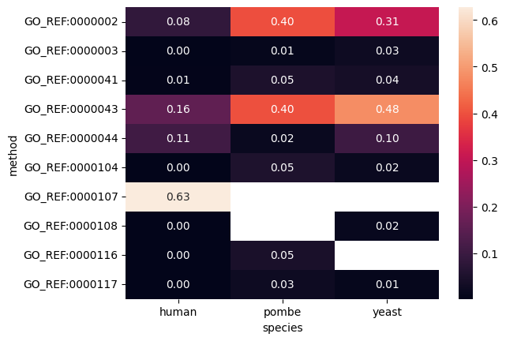

Analyze Contributions of different methods to Annotation
This notebook analyzes relative contributions of different IEA methods to annotation
[2]:
from oaklib import get_adapter
from oaklib.datamodels.vocabulary import IS_A, PART_OF
from oaklib.datamodels.association import Association
from oaklib.parsers.gaf_association_parser import GafAssociationColumns
from oaklib.utilities.associations.association_differ import AssociationDiffer
from oaklib.utilities.subsets.slimmer_utils import filter_redundant
import pandas as pd
# Get a GO handle
go = get_adapter("sqlite:obo:go")
[3]:
# Data Dictionary
GENE = GafAssociationColumns.local_id.value
TERM = GafAssociationColumns.ontology_class_ref.value
[4]:
# Cache HTTP requests
import requests_cache
requests_cache.install_cache("output/requests_cache")
[5]:
# Alias for GO command line queries
[6]:
%alias go runoak -i sqlite:obo:go
Routine to parse a GAF to a DataFrame
[9]:
def gaf2df(path: str) -> pd.DataFrame:
df = pd.read_csv(path, sep="\t", comment="!", names=[c.value for c in GafAssociationColumns])
return df.query(f"'|' not in qualifiers")
df = gaf2df("../../../../tests/input/mgi-truncated.gaf")
df
[9]:
| db | local_id | db_object_symbol | qualifiers | ontology_class_ref | supporting_references | evidence_type | with_or_from | aspect | db_object_name | db_object_synonyms | db_object_type | db_object_taxon | annotation_date | assigned_by | annotation_extensions | gene_product_form | |
|---|---|---|---|---|---|---|---|---|---|---|---|---|---|---|---|---|---|
| 0 | MGI | MGI:1918911 | 0610005C13Rik | enables | GO:0003674 | MGI:MGI:2156816|GO_REF:0000015 | ND | NaN | F | RIKEN cDNA 0610005C13 gene | NaN | gene | taxon:10090 | 20200917 | MGI | NaN | NaN |
| 1 | MGI | MGI:1918911 | 0610005C13Rik | is_active_in | GO:0005575 | MGI:MGI:2156816|GO_REF:0000015 | ND | NaN | C | RIKEN cDNA 0610005C13 gene | NaN | gene | taxon:10090 | 20100209 | MGI | NaN | NaN |
| 2 | MGI | MGI:1918911 | 0610005C13Rik | involved_in | GO:0008150 | MGI:MGI:2156816|GO_REF:0000015 | ND | NaN | P | RIKEN cDNA 0610005C13 gene | NaN | gene | taxon:10090 | 20100209 | MGI | NaN | NaN |
| 3 | MGI | MGI:1923503 | 0610006L08Rik | enables | GO:0003674 | MGI:MGI:2156816|GO_REF:0000015 | ND | NaN | F | RIKEN cDNA 0610006L08 gene | NaN | gene | taxon:10090 | 20120430 | MGI | NaN | NaN |
| 4 | MGI | MGI:1923503 | 0610006L08Rik | is_active_in | GO:0005575 | MGI:MGI:2156816|GO_REF:0000015 | ND | NaN | C | RIKEN cDNA 0610006L08 gene | NaN | gene | taxon:10090 | 20120430 | MGI | NaN | NaN |
| 5 | MGI | MGI:1923503 | 0610006L08Rik | involved_in | GO:0008150 | MGI:MGI:2156816|GO_REF:0000015 | ND | NaN | P | RIKEN cDNA 0610006L08 gene | NaN | gene | taxon:10090 | 20120430 | MGI | NaN | NaN |
| 6 | MGI | MGI:1925547 | 0610008J02Rik | enables | GO:0003674 | MGI:MGI:2156816|GO_REF:0000015 | ND | NaN | F | RIKEN cDNA 0610008J02 gene | NaN | gene | taxon:10090 | 20210426 | MGI | NaN | NaN |
| 7 | MGI | MGI:1925547 | 0610008J02Rik | is_active_in | GO:0005575 | MGI:MGI:2156816|GO_REF:0000015 | ND | NaN | C | RIKEN cDNA 0610008J02 gene | NaN | gene | taxon:10090 | 20210426 | MGI | NaN | NaN |
| 8 | MGI | MGI:1925547 | 0610008J02Rik | involved_in | GO:0008150 | MGI:MGI:2156816|GO_REF:0000015 | ND | NaN | P | RIKEN cDNA 0610008J02 gene | NaN | gene | taxon:10090 | 20210426 | MGI | NaN | NaN |
| 9 | MGI | MGI:1913300 | 0610009B22Rik | involved_in | GO:0001501 | MGI:MGI:4834177|GO_REF:0000096 | ISO | UniProtKB:P0DI81 | P | RIKEN cDNA 0610009B22 gene | NaN | protein | taxon:10090 | 20110927 | MGI | NaN | NaN |
| 10 | MGI | MGI:1913300 | 0610009B22Rik | located_in | GO:0005634 | MGI:MGI:4834177|GO_REF:0000096 | ISO | UniProtKB:P0DI81 | C | RIKEN cDNA 0610009B22 gene | NaN | protein | taxon:10090 | 20160909 | MGI | NaN | NaN |
| 11 | MGI | MGI:1913300 | 0610009B22Rik | located_in | GO:0005654 | MGI:MGI:4834177|GO_REF:0000096 | ISO | UniProtKB:P0DI81 | C | RIKEN cDNA 0610009B22 gene | NaN | protein | taxon:10090 | 20151016 | MGI | NaN | NaN |
| 12 | MGI | MGI:1913300 | 0610009B22Rik | located_in | GO:0005783 | MGI:MGI:4834177|GO_REF:0000096 | ISO | UniProtKB:P0DI81 | C | RIKEN cDNA 0610009B22 gene | NaN | protein | taxon:10090 | 20151016 | MGI | NaN | NaN |
| 13 | MGI | MGI:1913300 | 0610009B22Rik | part_of | GO:0030008 | MGI:MGI:4834177|GO_REF:0000096 | ISO | UniProtKB:P0DI81 | C | RIKEN cDNA 0610009B22 gene | NaN | protein | taxon:10090 | 20170627 | MGI | NaN | NaN |
| 14 | MGI | MGI:1913300 | 0610009B22Rik | located_in | GO:0043231 | MGI:MGI:4834177|GO_REF:0000096 | ISO | UniProtKB:P0DI81 | C | RIKEN cDNA 0610009B22 gene | NaN | protein | taxon:10090 | 20151016 | MGI | NaN | NaN |
| 15 | MGI | MGI:1913300 | 0610009B22Rik | enables | GO:0044325 | MGI:MGI:4834177|GO_REF:0000096 | ISO | UniProtKB:P0DI81 | F | RIKEN cDNA 0610009B22 gene | NaN | protein | taxon:10090 | 20130215 | MGI | NaN | NaN |
| 16 | MGI | MGI:1913300 | 0610009B22Rik | located_in | GO:0048471 | MGI:MGI:4834177|GO_REF:0000096 | ISO | UniProtKB:P0DI81 | C | RIKEN cDNA 0610009B22 gene | NaN | protein | taxon:10090 | 20130215 | MGI | NaN | NaN |
| 17 | MGI | MGI:3698435 | 0610009E02Rik | enables | GO:0003674 | MGI:MGI:2156816|GO_REF:0000015 | ND | NaN | F | RIKEN cDNA 0610009E02 gene | NaN | gene | taxon:10090 | 20100209 | MGI | NaN | NaN |
| 18 | MGI | MGI:3698435 | 0610009E02Rik | is_active_in | GO:0005575 | MGI:MGI:2156816|GO_REF:0000015 | ND | NaN | C | RIKEN cDNA 0610009E02 gene | NaN | gene | taxon:10090 | 20100209 | MGI | NaN | NaN |
[14]:
COMMON = "common"
UNIQUE1 = "unique1"
UNIQUE2 = "unique2"
def old_compare_gene_dfs(gene, df1, df2, preds=None):
terms1 = set(df1[TERM])
terms2 = set(df2[TERM])
closure1 = set(list(go.ancestors(list(terms1), preds)))
closure2 = set(list(go.ancestors(list(terms2), preds)))
nr_closure1 = set(filter_redundant(go, closure1, preds))
nr_closure2 = set(filter_redundant(go, closure2, preds))
unique1 = nr_closure1.difference(nr_closure2)
unique2 = nr_closure2.difference(nr_closure1)
return {GENE: gene, UNIQUE1: unique1, UNIQUE2: unique2}
def old_compare_gaf_dfs(df1, df2, preds=[IS_A, PART_OF]):
genes1 = set(df1[GENE])
genes2 = set(df2[GENE])
objs = []
for gene in genes1.union(genes2):
subdf1 = df1.query(f"{GENE} == '{gene}'")
subdf2 = df2.query(f"{GENE} == '{gene}'")
for obj in compare_gene_dfs(gene, subdf1, subdf2, preds):
objs.append(obj)
return pd.DataFrame(objs)
compare_gaf_dfs(df1, df2, preds=[IS_A, PART_OF])
[14]:
| 0 | |
|---|---|
| 0 | local_id |
| 1 | unique1 |
| 2 | unique2 |
| 3 | local_id |
| 4 | unique1 |
| 5 | unique2 |
| 6 | local_id |
| 7 | unique1 |
| 8 | unique2 |
| 9 | local_id |
| 10 | unique1 |
| 11 | unique2 |
| 12 | local_id |
| 13 | unique1 |
| 14 | unique2 |
Function to analyze contribution
[10]:
def df2assocs(df):
# TODO: why not use GAF adapter?
for _, row in df.iterrows():
yield Association(subject=row[GENE], object=row[TERM])
def compare_gaf_dfs(df1, df2, preds=[IS_A, PART_OF]):
"""
Perform an association diff between two GAF DataFrames
"""
assocs1 = list(df2assocs(df1))
assocs2 = list(df2assocs(df2))
differ = AssociationDiffer(go)
objs = []
for ch in differ.calculate_change_objects(assocs1, assocs2, preds):
objs.append(ch)
return pd.DataFrame(objs).dropna(axis=1, how='all')
compare_gaf_dfs(df1, df2, preds=[IS_A, PART_OF])
---------------------------------------------------------------------------
NameError Traceback (most recent call last)
Cell In[10], line 18
15 objs.append(ch)
16 return pd.DataFrame(objs).dropna(axis=1, how='all')
---> 18 compare_gaf_dfs(df1, df2, preds=[IS_A, PART_OF])
NameError: name 'df1' is not defined
Human GAF analysis
[89]:
!mkdir -p input
[22]:
!curl -L -s http://release.geneontology.org/2023-04-01/annotations/goa_human.gaf.gz | gzip -dc > input/goa_human.gaf
[11]:
!head input/goa_human.gaf
!gaf-version: 2.2
!
!generated-by: GOC
!
!date-generated: 2023-04-02T12:17
!
!Header from source association file:
!=================================
!
!generated-by: GOC
[12]:
df = gaf2df("input/goa_human.gaf")
/var/folders/nc/m4tx21912kv1b8nk3zzx9plr0000gn/T/ipykernel_46260/614969007.py:2: DtypeWarning: Columns (15) have mixed types. Specify dtype option on import or set low_memory=False.
df = pd.read_csv(path, sep="\t", comment="!", names=[c.value for c in GafAssociationColumns])
[13]:
df
[13]:
| db | local_id | db_object_symbol | qualifiers | ontology_class_ref | supporting_references | evidence_type | with_or_from | aspect | db_object_name | db_object_synonyms | db_object_type | db_object_taxon | annotation_date | assigned_by | annotation_extensions | gene_product_form | |
|---|---|---|---|---|---|---|---|---|---|---|---|---|---|---|---|---|---|
| 0 | UniProtKB | A0A024RBG1 | NUDT4B | enables | GO:0003723 | GO_REF:0000043 | IEA | UniProtKB-KW:KW-0694 | F | Diphosphoinositol polyphosphate phosphohydrola... | NUDT4B | protein | taxon:9606 | 20230306 | UniProt | NaN | NaN |
| 1 | UniProtKB | A0A024RBG1 | NUDT4B | enables | GO:0046872 | GO_REF:0000043 | IEA | UniProtKB-KW:KW-0479 | F | Diphosphoinositol polyphosphate phosphohydrola... | NUDT4B | protein | taxon:9606 | 20230306 | UniProt | NaN | NaN |
| 2 | UniProtKB | A0A024RBG1 | NUDT4B | located_in | GO:0005829 | GO_REF:0000052 | IDA | NaN | C | Diphosphoinositol polyphosphate phosphohydrola... | NUDT4B | protein | taxon:9606 | 20161204 | HPA | NaN | NaN |
| 3 | UniProtKB | A0A075B6H7 | IGKV3-7 | involved_in | GO:0002250 | GO_REF:0000043 | IEA | UniProtKB-KW:KW-1064 | P | Probable non-functional immunoglobulin kappa v... | IGKV3-7 | protein | taxon:9606 | 20230306 | UniProt | NaN | NaN |
| 4 | UniProtKB | A0A075B6H7 | IGKV3-7 | located_in | GO:0005886 | GO_REF:0000044 | IEA | UniProtKB-SubCell:SL-0039 | C | Probable non-functional immunoglobulin kappa v... | IGKV3-7 | protein | taxon:9606 | 20230306 | UniProt | NaN | NaN |
| ... | ... | ... | ... | ... | ... | ... | ... | ... | ... | ... | ... | ... | ... | ... | ... | ... | ... |
| 630736 | UniProtKB | P35580 | MYH10 | involved_in | GO:0031032 | PMID:21873635 | IBA | PANTHER:PTN002897265|UniProtKB:P35580|MGI:MGI:... | P | Myosin-10 | MYH10 | protein | taxon:9606 | 20220223 | GO_Central | NaN | NaN |
| 630737 | UniProtKB | Q10472 | GALNT1 | involved_in | GO:0006493 | PMID:21873635 | IBA | PANTHER:PTN004287905|WB:WBGene00001630|UniProt... | P | Polypeptide N-acetylgalactosaminyltransferase 1 | GALNT1 | protein | taxon:9606 | 20230110 | GO_Central | NaN | NaN |
| 630738 | UniProtKB | Q6NXT2 | H3-5 | is_active_in | GO:0005634 | PMID:21873635 | IBA | PANTHER:PTN008517671|dictyBase:DDB_G0271092|Un... | C | Histone H3.3C | H3-5|H3F3C | protein | taxon:9606 | 20230110 | GO_Central | NaN | NaN |
| 630739 | UniProtKB | Q9NS87 | KIF15 | is_active_in | GO:0005874 | PMID:21873635 | IBA | PANTHER:PTN000648413|UniProtKB:C8V3Q8|UniProtK... | C | Kinesin-like protein KIF15 | KIF15|KLP2|KNSL7 | protein | taxon:9606 | 20230111 | GO_Central | NaN | NaN |
| 630740 | UniProtKB | P01889 | HLA-B | is_active_in | GO:0005615 | PMID:21873635 | IBA | PANTHER:PTN002703355|UniProtKB:Q30201|UniProtK... | C | HLA class I histocompatibility antigen, B alph... | HLA-B|HLAB | protein | taxon:9606 | 20181121 | GO_Central | NaN | NaN |
630741 rows × 17 columns
[14]:
iea = df.query("evidence_type == 'IEA'")
iea.groupby(['supporting_references']).count()
[14]:
| db | local_id | db_object_symbol | qualifiers | ontology_class_ref | evidence_type | with_or_from | aspect | db_object_name | db_object_synonyms | db_object_type | db_object_taxon | annotation_date | assigned_by | annotation_extensions | gene_product_form | |
|---|---|---|---|---|---|---|---|---|---|---|---|---|---|---|---|---|
| supporting_references | ||||||||||||||||
| GO_REF:0000002 | 6331 | 6331 | 6331 | 6331 | 6331 | 6331 | 6331 | 6331 | 6331 | 6321 | 6331 | 6331 | 6331 | 6331 | 0 | 0 |
| GO_REF:0000003 | 1052 | 1052 | 1052 | 1052 | 1052 | 1052 | 1052 | 1052 | 1052 | 1052 | 1052 | 1052 | 1052 | 1052 | 0 | 0 |
| GO_REF:0000041 | 738 | 738 | 738 | 738 | 738 | 738 | 738 | 738 | 738 | 738 | 738 | 738 | 738 | 738 | 0 | 0 |
| GO_REF:0000043 | 13433 | 13433 | 13433 | 13433 | 13433 | 13433 | 13433 | 13433 | 13433 | 13418 | 13433 | 13433 | 13433 | 13433 | 0 | 0 |
| GO_REF:0000044 | 8086 | 8086 | 8086 | 8086 | 8086 | 8086 | 8086 | 8086 | 8086 | 8073 | 8086 | 8086 | 8086 | 8086 | 0 | 0 |
| GO_REF:0000104 | 199 | 199 | 199 | 199 | 199 | 199 | 199 | 199 | 199 | 199 | 199 | 199 | 199 | 199 | 0 | 0 |
| GO_REF:0000107 | 39108 | 39108 | 39108 | 39108 | 39108 | 39108 | 39108 | 39108 | 39108 | 39108 | 39108 | 39108 | 39108 | 39108 | 0 | 0 |
| GO_REF:0000108 | 3680 | 3680 | 3680 | 3680 | 3680 | 3680 | 3680 | 3680 | 3680 | 3678 | 3680 | 3680 | 3680 | 3680 | 0 | 0 |
| GO_REF:0000116 | 1147 | 1147 | 1147 | 1147 | 1147 | 1147 | 1147 | 1147 | 1147 | 1147 | 1147 | 1147 | 1147 | 1147 | 0 | 0 |
| GO_REF:0000117 | 214 | 214 | 214 | 214 | 214 | 214 | 214 | 214 | 214 | 213 | 214 | 214 | 214 | 214 | 0 | 0 |
Fetch all GOREFs
[15]:
gorefs = set(iea['supporting_references'])
gorefs
[15]:
{'GO_REF:0000002',
'GO_REF:0000003',
'GO_REF:0000041',
'GO_REF:0000043',
'GO_REF:0000044',
'GO_REF:0000104',
'GO_REF:0000107',
'GO_REF:0000108',
'GO_REF:0000116',
'GO_REF:0000117'}
[16]:
def add_labels(df):
"""
Annotate Diff DataFrame with labels for the objects that are "lost"
"""
df["old_object_label"] = df.apply(lambda row: go.label(row["old_object"]), axis=1)
[17]:
def analyze_iea(df, ref):
"""
Simulate deleting the IEAs with the stated reference.
"""
df_minus = df.query(f'supporting_references != "{ref}"')
return compare_gaf_dfs(df, df_minus)
RHEA
[43]:
rhea = analyze_iea(df, "GO_REF:0000116")
[66]:
add_labels(rhea)
rhea
[66]:
| publications | subject | old_object | old_object_obsolete | is_deletion | closure_predicates | closure_delta | old_object_label | |
|---|---|---|---|---|---|---|---|---|
| 0 | [] | P22612 | GO:0106310 | False | True | [rdfs:subClassOf, BFO:0000050] | -1 | protein serine kinase activity |
| 1 | [] | Q9Y3S1 | GO:0106310 | False | True | [rdfs:subClassOf, BFO:0000050] | -1 | protein serine kinase activity |
| 2 | [] | Q9NUU7 | GO:0016887 | False | True | [rdfs:subClassOf, BFO:0000050] | -6 | ATP hydrolysis activity |
| 3 | [] | Q16584 | GO:0106310 | False | True | [rdfs:subClassOf, BFO:0000050] | -1 | protein serine kinase activity |
| 4 | [] | P17516 | GO:0047045 | False | True | [rdfs:subClassOf, BFO:0000050] | -1 | testosterone 17-beta-dehydrogenase (NADP+) act... |
| ... | ... | ... | ... | ... | ... | ... | ... | ... |
| 720 | [] | Q5VST9 | GO:0106310 | False | True | [rdfs:subClassOf, BFO:0000050] | -1 | protein serine kinase activity |
| 721 | [] | O43293 | GO:0106310 | False | True | [rdfs:subClassOf, BFO:0000050] | -1 | protein serine kinase activity |
| 722 | [] | Q9H2U1 | GO:0016887 | False | True | [rdfs:subClassOf, BFO:0000050] | -6 | ATP hydrolysis activity |
| 723 | [] | Q6DHV7 | GO:0062154 | False | True | [rdfs:subClassOf, BFO:0000050] | -1 | N6-methyl-AMP deaminase activity |
| 724 | [] | Q5TCX8 | GO:0106310 | False | True | [rdfs:subClassOf, BFO:0000050] | -1 | protein serine kinase activity |
725 rows × 8 columns
[70]:
lbl = ['old_object', 'old_object_label']
rhea.groupby(lbl).mean(numeric_only=True)
[70]:
| old_object_obsolete | is_deletion | closure_delta | ||
|---|---|---|---|---|
| old_object | old_object_label | |||
| GO:0002083 | 4-hydroxybenzoate decaprenyltransferase activity | 0.0 | 1.0 | -2.0 |
| GO:0003924 | GTPase activity | 0.0 | 1.0 | -5.0 |
| GO:0003954 | NADH dehydrogenase activity | 0.0 | 1.0 | -1.0 |
| GO:0004052 | arachidonate 12(S)-lipoxygenase activity | 0.0 | 1.0 | -1.0 |
| GO:0004115 | 3',5'-cyclic-AMP phosphodiesterase activity | 0.0 | 1.0 | -2.0 |
| ... | ... | ... | ... | ... |
| GO:0140947 | histone H3K9me2 methyltransferase activity | 0.0 | 1.0 | -1.0 |
| GO:0140948 | histone H3K9 monomethyltransferase activity | 0.0 | 1.0 | -1.0 |
| GO:1901480 | oleate transmembrane transporter activity | 0.0 | 1.0 | -1.0 |
| GO:1990002 | methylglyoxal reductase (NADPH-dependent, acetol producing) | 0.0 | 1.0 | -1.0 |
| GO:1990362 | butanol dehydrogenase activity | 0.0 | 1.0 | -1.0 |
153 rows × 3 columns
[73]:
pd.set_option('display.max_rows', 1000)
rhea.groupby(lbl).min(numeric_only=True).sort_values("closure_delta")
[73]:
| old_object_obsolete | is_deletion | closure_delta | ||
|---|---|---|---|---|
| old_object | old_object_label | |||
| GO:0016279 | protein-lysine N-methyltransferase activity | False | True | -10 |
| GO:0140933 | 5'-(N(7)-methylguanosine 5'-triphospho)-[mRNA] hydrolase activity | False | True | -9 |
| GO:0016887 | ATP hydrolysis activity | False | True | -7 |
| GO:0003924 | GTPase activity | False | True | -7 |
| GO:0052665 | tRNA (uracil-2'-O-)-methyltransferase activity | False | True | -4 |
| GO:0036134 | 12-hydroxyheptadecatrienoic acid synthase activity | False | True | -4 |
| GO:0004713 | protein tyrosine kinase activity | False | True | -4 |
| GO:0090555 | phosphatidylethanolamine flippase activity | False | True | -4 |
| GO:0097023 | fructose 6-phosphate aldolase activity | False | True | -4 |
| GO:0004165 | delta(3)-delta(2)-enoyl-CoA isomerase activity | False | True | -4 |
| GO:0106294 | NADPH oxidase H202-forming activity | False | True | -4 |
| GO:0090556 | phosphatidylserine floppase activity | False | True | -3 |
| GO:0047748 | cholestanetetraol 26-dehydrogenase activity | False | True | -3 |
| GO:0016290 | palmitoyl-CoA hydrolase activity | False | True | -3 |
| GO:0004722 | protein serine/threonine phosphatase activity | False | True | -3 |
| GO:0004115 | 3',5'-cyclic-AMP phosphodiesterase activity | False | True | -3 |
| GO:0140567 | membrane protein dislocase activity | False | True | -3 |
| GO:0047045 | testosterone 17-beta-dehydrogenase (NADP+) activity | False | True | -3 |
| GO:0008458 | carnitine O-octanoyltransferase activity | False | True | -3 |
| GO:0102391 | decanoate-CoA ligase activity | False | True | -2 |
| GO:0047956 | glycerol dehydrogenase [NADP+] activity | False | True | -2 |
| GO:0062189 | anandamide 14,15 epoxidase activity | False | True | -2 |
| GO:0043262 | ADP phosphatase activity | False | True | -2 |
| GO:0106347 | U2 snRNA 2'-O-methyladenosine m6 methyltransferase activity | False | True | -2 |
| GO:0042054 | histone methyltransferase activity | False | True | -2 |
| GO:0034485 | phosphatidylinositol-3,4,5-trisphosphate 5-phosphatase activity | False | True | -2 |
| GO:0047451 | (3R)-3-hydroxyoctanoyl-[acyl-carrier-protein] dehydratase activity | False | True | -2 |
| GO:0043759 | methylbutanoate-CoA ligase activity | False | True | -2 |
| GO:0106156 | peptidyl-lysine 4-dioxygenase activity | False | True | -2 |
| GO:0044594 | 17-beta-hydroxysteroid dehydrogenase (NAD+) activity | False | True | -2 |
| GO:0047376 | all-trans-retinyl-palmitate hydrolase, all-trans-retinol forming activity | False | True | -2 |
| GO:0106364 | 4-hydroxy-3-all-trans-hexaprenylbenzoate oxygenase activity | False | True | -2 |
| GO:0034480 | phosphatidylcholine phospholipase C activity | False | True | -2 |
| GO:0002083 | 4-hydroxybenzoate decaprenyltransferase activity | False | True | -2 |
| GO:0047035 | testosterone dehydrogenase (NAD+) activity | False | True | -2 |
| GO:0062188 | anandamide 11,12 epoxidase activity | False | True | -2 |
| GO:0062187 | anandamide 8,9 epoxidase activity | False | True | -2 |
| GO:0090554 | phosphatidylcholine floppase activity | False | True | -2 |
| GO:0004317 | (3R)-hydroxypalmitoyl-[acyl-carrier-protein] dehydratase activity | False | True | -2 |
| GO:0051922 | cholesterol sulfotransferase activity | False | True | -2 |
| GO:0004439 | phosphatidylinositol-4,5-bisphosphate 5-phosphatase activity | False | True | -2 |
| GO:0016312 | inositol bisphosphate phosphatase activity | False | True | -2 |
| GO:0052848 | inositol-3,5-bisdiphosphate-2,3,4,6-tetrakisphosphate 5-diphosphatase activity | False | True | -2 |
| GO:0015417 | ABC-type polyamine transporter activity | False | True | -2 |
| GO:0008106 | alcohol dehydrogenase (NADP+) activity | False | True | -2 |
| GO:0052845 | inositol-5-diphosphate-1,2,3,4,6-pentakisphosphate diphosphatase activity | False | True | -2 |
| GO:0008970 | phospholipase A1 activity | False | True | -2 |
| GO:0019705 | protein-cysteine S-myristoyltransferase activity | False | True | -2 |
| GO:0008693 | (3R)-3-hydroxydecanoyl-[acyl-carrier-protein] dehydratase activity | False | True | -2 |
| GO:0106009 | (4S)-4-hydroxy-2-oxoglutarate aldolase activity | False | True | -1 |
| GO:0102336 | 3-oxo-arachidoyl-CoA synthase activity | False | True | -1 |
| GO:0103026 | fructose-1-phosphatase activity | False | True | -1 |
| GO:0098606 | selenocystathionine gamma-lyase activity | False | True | -1 |
| GO:0102991 | myristoyl-CoA hydrolase activity | False | True | -1 |
| GO:0102662 | malonate-semialdehyde dehydrogenase (acetylating, NAD+) activity | False | True | -1 |
| GO:0102354 | 11-cis-retinol dehydrogenase activity | False | True | -1 |
| GO:0102149 | farnesylcysteine lyase activity | False | True | -1 |
| GO:0102175 | 3-beta-hydroxysteroid dehydrogenase/C4-decarboxylase activity | False | True | -1 |
| GO:0102338 | 3-oxo-lignoceronyl-CoA synthase activity | False | True | -1 |
| GO:0102337 | 3-oxo-cerotoyl-CoA synthase activity | False | True | -1 |
| GO:0106008 | 2-oxoglutaramate amidase activity | False | True | -1 |
| GO:0097383 | dIDP phosphatase activity | False | True | -1 |
| GO:0106375 | deoxynucleoside triphosphate hydrolase activity | False | True | -1 |
| GO:0106237 | arachidonate 12(R)-lipoxygenase activity | False | True | -1 |
| GO:1901480 | oleate transmembrane transporter activity | False | True | -1 |
| GO:0140948 | histone H3K9 monomethyltransferase activity | False | True | -1 |
| GO:0140947 | histone H3K9me2 methyltransferase activity | False | True | -1 |
| GO:0140945 | histone H3K4 monomethyltransferase activity | False | True | -1 |
| GO:0140944 | histone H4K20 monomethyltransferase activity | False | True | -1 |
| GO:0140943 | histone H4K20 trimethyltransferase activity | False | True | -1 |
| GO:0140941 | histone H4K20me methyltransferase activity | False | True | -1 |
| GO:0140818 | mRNA 5'-phosphatase activity | False | True | -1 |
| GO:0140804 | NAD+- protein-lysine ADP-ribosyltransferase activity | False | True | -1 |
| GO:0140803 | NAD+- protein-cysteine ADP-ribosyltransferase activity | False | True | -1 |
| GO:0140683 | histone H3K9me/H3K9me2 demethylase activity | False | True | -1 |
| GO:0140562 | EGF-domain serine xylosyltransferase activity | False | True | -1 |
| GO:0140561 | EGF-domain serine glucosyltransferase activity | False | True | -1 |
| GO:0106226 | peptide 2-hydroxyisobutyryltransferase activity | False | True | -1 |
| GO:0140439 | protein-cysteine S-stearoyltransferase activity | False | True | -1 |
| GO:0120243 | 2-iminopropanoate deaminase activity | False | True | -1 |
| GO:0120092 | crotonyl-CoA hydratase activity | False | True | -1 |
| GO:0110153 | RNA NAD-cap (NMN-forming) hydrolase activity | False | True | -1 |
| GO:0106433 | O6-methyl-dGTP hydrolase activity | False | True | -1 |
| GO:0106431 | N6-methyl-(d)ATP hydrolase activity | False | True | -1 |
| GO:0106399 | acyl-coenzyme A diphosphatase activity | False | True | -1 |
| GO:0106386 | (3R)-hydroxyacyl-CoA dehydrogenase (NAD) activity | False | True | -1 |
| GO:0106376 | 2-hydroxyphytanoyl-CoA lyase activity | False | True | -1 |
| GO:0106329 | L-phenylalaine oxidase activity | False | True | -1 |
| GO:0106313 | methylenetetrahydrofolate reductase NADPH activity | False | True | -1 |
| GO:0106310 | protein serine kinase activity | False | True | -1 |
| GO:0106301 | arachidonic acid 5,6-epoxygenase activity | False | True | -1 |
| GO:0106293 | NADH oxidase H202-forming activity | False | True | -1 |
| GO:0120298 | peptide noradrenalinyltransferase activity | False | True | -1 |
| GO:0080079 | cellobiose glucosidase activity | False | True | -1 |
| GO:0047982 | homocysteine desulfhydrase activity | False | True | -1 |
| GO:0070251 | pristanate-CoA ligase activity | False | True | -1 |
| GO:0036220 | ITP diphosphatase activity | False | True | -1 |
| GO:0036219 | GTP diphosphatase activity | False | True | -1 |
| GO:0036218 | dTTP diphosphatase activity | False | True | -1 |
| GO:0036130 | prostaglandin H2 endoperoxidase reductase activity | False | True | -1 |
| GO:0035870 | dITP diphosphatase activity | False | True | -1 |
| GO:0035242 | protein-arginine omega-N asymmetric methyltransferase activity | False | True | -1 |
| GO:0035241 | protein-arginine omega-N monomethyltransferase activity | False | True | -1 |
| GO:0033779 | 5beta-cholestane-3alpha,7alpha-diol 12alpha-hydroxylase activity | False | True | -1 |
| GO:0033703 | 3beta-hydroxy-5beta-steroid dehydrogenase activity | False | True | -1 |
| GO:0031956 | medium-chain fatty acid-CoA ligase activity | False | True | -1 |
| GO:0018820 | cyanamide hydratase activity | False | True | -1 |
| GO:0016617 | 4-oxoproline reductase activity | False | True | -1 |
| GO:0010308 | acireductone dioxygenase (Ni2+-requiring) activity | False | True | -1 |
| GO:0008983 | protein-glutamate O-methyltransferase activity | False | True | -1 |
| GO:0008753 | NADPH dehydrogenase (quinone) activity | False | True | -1 |
| GO:0008405 | arachidonic acid 11,12-epoxygenase activity | False | True | -1 |
| GO:0008404 | arachidonic acid 14,15-epoxygenase activity | False | True | -1 |
| GO:0004806 | triglyceride lipase activity | False | True | -1 |
| GO:0004745 | NAD-retinol dehydrogenase activity | False | True | -1 |
| GO:0004427 | inorganic diphosphate phosphatase activity | False | True | -1 |
| GO:0004354 | glutamate dehydrogenase (NADP+) activity | False | True | -1 |
| GO:0004336 | galactosylceramidase activity | False | True | -1 |
| GO:0004180 | carboxypeptidase activity | False | True | -1 |
| GO:0004052 | arachidonate 12(S)-lipoxygenase activity | False | True | -1 |
| GO:0003954 | NADH dehydrogenase activity | False | True | -1 |
| GO:0036221 | UTP diphosphatase activity | False | True | -1 |
| GO:0072582 | 17-beta-hydroxysteroid dehydrogenase (NADP+) activity | False | True | -1 |
| GO:0036222 | XTP diphosphatase activity | False | True | -1 |
| GO:0036430 | CMP kinase activity | False | True | -1 |
| GO:0062184 | testosterone 16-beta-hydroxylase activity | False | True | -1 |
| GO:0062183 | all-trans retinoic acid 18-hydroxylase activity | False | True | -1 |
| GO:0062182 | all-trans retinoic acid 4-hydrolase activity | False | True | -1 |
| GO:0062154 | N6-methyl-AMP deaminase activity | False | True | -1 |
| GO:0052596 | phenethylamine:oxygen oxidoreductase (deaminating) activity | False | True | -1 |
| GO:0052595 | aliphatic amine oxidase activity | False | True | -1 |
| GO:0050213 | progesterone 5-alpha-reductase activity | False | True | -1 |
| GO:0050048 | L-leucine:2-oxoglutarate aminotransferase activity | False | True | -1 |
| GO:0047995 | hydroxyphenylpyruvate reductase activity | False | True | -1 |
| GO:1990002 | methylglyoxal reductase (NADPH-dependent, acetol producing) | False | True | -1 |
| GO:0047975 | guanosine phosphorylase activity | False | True | -1 |
| GO:0047935 | glucose 1-dehydrogenase (NADP+) activity | False | True | -1 |
| GO:0036403 | arachidonate 8(S)-lipoxygenase activity | False | True | -1 |
| GO:0047934 | glucose 1-dehydrogenase (NAD+) activity | False | True | -1 |
| GO:0047844 | deoxycytidine deaminase activity | False | True | -1 |
| GO:0047693 | ATP diphosphatase activity | False | True | -1 |
| GO:0047638 | albendazole monooxygenase activity | False | True | -1 |
| GO:0047555 | 3',5'-cyclic-GMP phosphodiesterase activity | False | True | -1 |
| GO:0047378 | acetylalkylglycerol acetylhydrolase activity | False | True | -1 |
| GO:0047022 | 7-beta-hydroxysteroid dehydrogenase (NADP+) activity | False | True | -1 |
| GO:0046899 | nucleoside triphosphate adenylate kinase activity | False | True | -1 |
| GO:0043956 | 3-hydroxypropionyl-CoA dehydratase activity | False | True | -1 |
| GO:0043878 | glyceraldehyde-3-phosphate dehydrogenase (NAD+) (non-phosphorylating) activity | False | True | -1 |
| GO:0043273 | CTPase activity | False | True | -1 |
| GO:0036431 | dCMP kinase activity | False | True | -1 |
| GO:0047931 | glucosamine kinase activity | False | True | -1 |
| GO:1990362 | butanol dehydrogenase activity | False | True | -1 |
| GO:0016937 | short-chain-acyl-CoA dehydrogenase activity | False | True | 0 |
[79]:
rhea.groupby("subject").count().query("publications > 3")
[79]:
| publications | old_object | old_object_obsolete | is_deletion | closure_predicates | closure_delta | old_object_label | |
|---|---|---|---|---|---|---|---|
| subject | |||||||
| P22413 | 4 | 4 | 4 | 4 | 4 | 4 | 4 |
[80]:
rhea.query("subject == 'P22413'")
[80]:
| publications | subject | old_object | old_object_obsolete | is_deletion | closure_predicates | closure_delta | old_object_label | |
|---|---|---|---|---|---|---|---|---|
| 483 | [] | P22413 | GO:0036221 | False | True | [rdfs:subClassOf, BFO:0000050] | -1 | UTP diphosphatase activity |
| 484 | [] | P22413 | GO:0004115 | False | True | [rdfs:subClassOf, BFO:0000050] | -3 | 3',5'-cyclic-AMP phosphodiesterase activity |
| 485 | [] | P22413 | GO:0036219 | False | True | [rdfs:subClassOf, BFO:0000050] | -1 | GTP diphosphatase activity |
| 486 | [] | P22413 | GO:0047693 | False | True | [rdfs:subClassOf, BFO:0000050] | -1 | ATP diphosphatase activity |
[81]:
rhea[["closure_delta"]].sum()
[81]:
closure_delta -1341
dtype: int64
ARBA
[74]:
arba = analyze_iea(df, "GO_REF:0000117")
[84]:
add_labels(arba)
[85]:
pd.set_option('display.max_rows', 10)
arba
[85]:
| publications | subject | old_object | old_object_obsolete | is_deletion | closure_predicates | closure_delta | old_object_label | |
|---|---|---|---|---|---|---|---|---|
| 0 | [] | Q96JM4 | GO:0009966 | None | True | [] | -10 | regulation of signal transduction |
| 1 | [] | Q96MZ0 | GO:0005737 | None | True | [] | -15 | cytoplasm |
| 2 | [] | P37275 | GO:0044271 | False | True | [rdfs:subClassOf, BFO:0000050] | 0 | cellular nitrogen compound biosynthetic process |
| 3 | [] | Q8TC17 | GO:0005737 | False | True | [rdfs:subClassOf, BFO:0000050] | -15 | cytoplasm |
| 4 | [] | Q9Y5H1 | GO:0007399 | False | True | [rdfs:subClassOf, BFO:0000050] | -6 | nervous system development |
| ... | ... | ... | ... | ... | ... | ... | ... | ... |
| 207 | [] | P32745 | GO:0007187 | False | True | [rdfs:subClassOf, BFO:0000050] | -1 | G protein-coupled receptor signaling pathway, ... |
| 208 | [] | P32745 | GO:0008285 | False | True | [rdfs:subClassOf, BFO:0000050] | -4 | negative regulation of cell population prolife... |
| 209 | [] | P29144 | GO:0006508 | False | True | [rdfs:subClassOf, BFO:0000050] | -1 | proteolysis |
| 210 | [] | Q9Y5G2 | GO:0007399 | False | True | [rdfs:subClassOf, BFO:0000050] | -6 | nervous system development |
| 211 | [] | Q5TH69 | GO:0005794 | False | True | [rdfs:subClassOf, BFO:0000050] | -1 | Golgi apparatus |
212 rows × 8 columns
[82]:
arba[["closure_delta"]].sum()
[82]:
closure_delta -1252
dtype: int64
[86]:
pd.set_option('display.max_rows', 1000)
arba.groupby(lbl).min(numeric_only=True).sort_values("closure_delta")
[86]:
| is_deletion | closure_delta | ||
|---|---|---|---|
| old_object | old_object_label | ||
| GO:0045892 | negative regulation of DNA-templated transcription | True | -31 |
| GO:0022625 | cytosolic large ribosomal subunit | True | -28 |
| GO:0005783 | endoplasmic reticulum | True | -21 |
| GO:0005634 | nucleus | True | -19 |
| GO:0043162 | ubiquitin-dependent protein catabolic process via the multivesicular body sorting pathway | True | -18 |
| GO:0007080 | mitotic metaphase plate congression | True | -18 |
| GO:0006470 | protein dephosphorylation | True | -16 |
| GO:1901673 | regulation of mitotic spindle assembly | True | -16 |
| GO:0005737 | cytoplasm | True | -15 |
| GO:0032434 | regulation of proteasomal ubiquitin-dependent protein catabolic process | True | -14 |
| GO:0006468 | protein phosphorylation | True | -14 |
| GO:0005794 | Golgi apparatus | True | -14 |
| GO:0016070 | RNA metabolic process | True | -14 |
| GO:0046488 | phosphatidylinositol metabolic process | True | -14 |
| GO:0001527 | microfibril | True | -13 |
| GO:0015012 | heparan sulfate proteoglycan biosynthetic process | True | -13 |
| GO:0005828 | kinetochore microtubule | True | -12 |
| GO:0046761 | viral budding from plasma membrane | True | -12 |
| GO:0098590 | plasma membrane region | True | -11 |
| GO:0097352 | autophagosome maturation | True | -11 |
| GO:0016925 | protein sumoylation | True | -11 |
| GO:0061952 | midbody abscission | True | -11 |
| GO:0009966 | regulation of signal transduction | True | -10 |
| GO:0005886 | plasma membrane | True | -10 |
| GO:0015229 | L-ascorbic acid transmembrane transporter activity | True | -10 |
| GO:0031468 | nuclear membrane reassembly | True | -9 |
| GO:0043229 | intracellular organelle | True | -9 |
| GO:0000776 | kinetochore | True | -9 |
| GO:0005930 | axoneme | True | -9 |
| GO:0005125 | cytokine activity | True | -9 |
| GO:0016020 | membrane | True | -8 |
| GO:0006508 | proteolysis | True | -8 |
| GO:0016567 | protein ubiquitination | True | -7 |
| GO:0001778 | plasma membrane repair | True | -7 |
| GO:0110165 | cellular anatomical entity | True | -7 |
| GO:0007605 | sensory perception of sound | True | -7 |
| GO:0008194 | UDP-glycosyltransferase activity | True | -7 |
| GO:0060548 | negative regulation of cell death | True | -7 |
| GO:0043565 | sequence-specific DNA binding | True | -6 |
| GO:0005643 | nuclear pore | True | -6 |
| GO:0006281 | DNA repair | True | -6 |
| GO:0016311 | dephosphorylation | True | -6 |
| GO:1904930 | amphisome membrane | True | -6 |
| GO:0005765 | lysosomal membrane | True | -6 |
| GO:0097729 | 9+2 motile cilium | True | -6 |
| GO:0007399 | nervous system development | True | -6 |
| GO:0009925 | basal plasma membrane | True | -5 |
| GO:0039702 | viral budding via host ESCRT complex | True | -5 |
| GO:0033554 | cellular response to stress | True | -5 |
| GO:0033036 | macromolecule localization | True | -5 |
| GO:0008757 | S-adenosylmethionine-dependent methyltransferase activity | True | -5 |
| GO:0046470 | phosphatidylcholine metabolic process | True | -5 |
| GO:0005654 | nucleoplasm | True | -5 |
| GO:0007606 | sensory perception of chemical stimulus | True | -5 |
| GO:0048468 | cell development | True | -5 |
| GO:0015250 | water channel activity | True | -4 |
| GO:0008201 | heparin binding | True | -4 |
| GO:0051128 | regulation of cellular component organization | True | -4 |
| GO:0008285 | negative regulation of cell population proliferation | True | -4 |
| GO:0005635 | nuclear envelope | True | -4 |
| GO:0005789 | endoplasmic reticulum membrane | True | -4 |
| GO:0048583 | regulation of response to stimulus | True | -4 |
| GO:0031982 | vesicle | True | -3 |
| GO:0071704 | organic substance metabolic process | True | -3 |
| GO:0005764 | lysosome | True | -2 |
| GO:0061459 | L-arginine transmembrane transporter activity | True | -2 |
| GO:0097381 | photoreceptor disc membrane | True | -2 |
| GO:0032585 | multivesicular body membrane | True | -2 |
| GO:0006950 | response to stress | True | -2 |
| GO:0032991 | protein-containing complex | True | -2 |
| GO:0005829 | cytosol | True | -2 |
| GO:0031640 | killing of cells of another organism | True | -2 |
| GO:0031625 | ubiquitin protein ligase binding | True | -2 |
| GO:1902774 | late endosome to lysosome transport | True | -2 |
| GO:0042802 | identical protein binding | True | -2 |
| GO:0008284 | positive regulation of cell population proliferation | True | -1 |
| GO:0071705 | nitrogen compound transport | True | -1 |
| GO:0071702 | organic substance transport | True | -1 |
| GO:0019899 | enzyme binding | True | -1 |
| GO:0005576 | extracellular region | True | -1 |
| GO:0030496 | midbody | True | -1 |
| GO:0031996 | thioesterase binding | True | -1 |
| GO:0007187 | G protein-coupled receptor signaling pathway, coupled to cyclic nucleotide second messenger | True | -1 |
| GO:0016570 | histone modification | True | -1 |
| GO:0007268 | chemical synaptic transmission | True | 0 |
| GO:0044271 | cellular nitrogen compound biosynthetic process | True | 0 |
| GO:0070098 | chemokine-mediated signaling pathway | True | 0 |
| GO:0071805 | potassium ion transmembrane transport | True | 0 |
| GO:0006351 | DNA-templated transcription | True | 0 |
| GO:0007155 | cell adhesion | True | 0 |
| GO:0006915 | apoptotic process | True | 0 |
| GO:0007186 | G protein-coupled receptor signaling pathway | True | 0 |
All IEAs
[87]:
# this takes some time....
dfs_by_ref = {}
for goref in gorefs:
print(goref)
dfs_by_ref[goref] = analyze_iea(df, goref)
[92]:
for k, df in dfs_by_ref.items():
df["method"] = k
[93]:
dfs_by_ref["GO_REF:0000041"]
[93]:
| publications | subject | old_object | old_object_obsolete | is_deletion | closure_predicates | closure_delta | method | |
|---|---|---|---|---|---|---|---|---|
| 0 | [] | Q53EU6 | GO:0016024 | False | True | [rdfs:subClassOf, BFO:0000050] | -2 | GO_REF:0000041 |
| 1 | [] | Q5VZY2 | GO:0006644 | False | True | [rdfs:subClassOf, BFO:0000050] | -2 | GO_REF:0000041 |
| 2 | [] | P10632 | GO:0042572 | False | True | [rdfs:subClassOf, BFO:0000050] | -4 | GO_REF:0000041 |
| 3 | [] | Q9NXB9 | GO:0006636 | False | True | [rdfs:subClassOf, BFO:0000050] | -1 | GO_REF:0000041 |
| 4 | [] | Q969V5 | GO:0016925 | False | True | [rdfs:subClassOf, BFO:0000050] | -3 | GO_REF:0000041 |
| 5 | [] | Q9P2W7 | GO:0006486 | False | True | [rdfs:subClassOf, BFO:0000050] | -5 | GO_REF:0000041 |
| 6 | [] | A6NK59 | GO:0016567 | False | True | [rdfs:subClassOf, BFO:0000050] | -12 | GO_REF:0000041 |
| 7 | [] | Q9H1B5 | GO:0030206 | False | True | [rdfs:subClassOf, BFO:0000050] | -2 | GO_REF:0000041 |
| 8 | [] | Q693B1 | GO:0016567 | False | True | [rdfs:subClassOf, BFO:0000050] | -12 | GO_REF:0000041 |
| 9 | [] | O60927 | GO:0016567 | False | True | [rdfs:subClassOf, BFO:0000050] | -5 | GO_REF:0000041 |
| 10 | [] | Q8WV16 | GO:0016567 | False | True | [rdfs:subClassOf, BFO:0000050] | -13 | GO_REF:0000041 |
| 11 | [] | Q9UK23 | GO:0006486 | False | True | [rdfs:subClassOf, BFO:0000050] | -11 | GO_REF:0000041 |
| 12 | [] | Q9HAY6 | GO:0042572 | False | True | [rdfs:subClassOf, BFO:0000050] | -8 | GO_REF:0000041 |
| 13 | [] | P30038 | GO:0010133 | False | True | [rdfs:subClassOf, BFO:0000050] | -5 | GO_REF:0000041 |
| 14 | [] | P20815 | GO:0042572 | False | True | [rdfs:subClassOf, BFO:0000050] | -5 | GO_REF:0000041 |
| 15 | [] | P11172 | GO:0044205 | False | True | [rdfs:subClassOf, BFO:0000050] | -1 | GO_REF:0000041 |
| 16 | [] | Q9H920 | GO:0016567 | False | True | [rdfs:subClassOf, BFO:0000050] | -5 | GO_REF:0000041 |
| 17 | [] | Q8N9I9 | GO:0016567 | False | True | [rdfs:subClassOf, BFO:0000050] | -12 | GO_REF:0000041 |
| 18 | [] | Q8TD30 | GO:0042853 | False | True | [rdfs:subClassOf, BFO:0000050] | -12 | GO_REF:0000041 |
| 19 | [] | P43304 | GO:0019563 | False | True | [rdfs:subClassOf, BFO:0000050] | -14 | GO_REF:0000041 |
| 20 | [] | Q8WXH6 | GO:0016567 | False | True | [rdfs:subClassOf, BFO:0000050] | -12 | GO_REF:0000041 |
| 21 | [] | Q9NQC1 | GO:0016567 | False | True | [rdfs:subClassOf, BFO:0000050] | -3 | GO_REF:0000041 |
| 22 | [] | Q15370 | GO:0016567 | False | True | [rdfs:subClassOf, BFO:0000050] | -7 | GO_REF:0000041 |
| 23 | [] | P22557 | GO:0006782 | False | True | [rdfs:subClassOf, BFO:0000050] | -2 | GO_REF:0000041 |
| 24 | [] | P08243 | GO:0070981 | False | True | [rdfs:subClassOf, BFO:0000050] | -6 | GO_REF:0000041 |
| 25 | [] | P36957 | GO:0033512 | False | True | [rdfs:subClassOf, BFO:0000050] | -21 | GO_REF:0000041 |
| 26 | [] | P13716 | GO:0006782 | False | True | [rdfs:subClassOf, BFO:0000050] | -2 | GO_REF:0000041 |
| 27 | [] | P47895 | GO:0042572 | False | True | [rdfs:subClassOf, BFO:0000050] | -4 | GO_REF:0000041 |
| 28 | [] | Q9NWM0 | GO:0046208 | False | True | [rdfs:subClassOf, BFO:0000050] | -2 | GO_REF:0000041 |
| 29 | [] | Q8N7A1 | GO:0016567 | False | True | [rdfs:subClassOf, BFO:0000050] | -5 | GO_REF:0000041 |
| 30 | [] | Q4G0X4 | GO:0016567 | False | True | [rdfs:subClassOf, BFO:0000050] | -5 | GO_REF:0000041 |
| 31 | [] | P33908 | GO:0006486 | False | True | [rdfs:subClassOf, BFO:0000050] | -9 | GO_REF:0000041 |
| 32 | [] | Q8WXK1 | GO:0016567 | False | True | [rdfs:subClassOf, BFO:0000050] | -12 | GO_REF:0000041 |
| 33 | [] | O00635 | GO:0016925 | False | True | [rdfs:subClassOf, BFO:0000050] | -3 | GO_REF:0000041 |
| 34 | [] | Q9UI17 | GO:0006579 | False | True | [rdfs:subClassOf, BFO:0000050] | -7 | GO_REF:0000041 |
| 35 | [] | Q9BQ90 | GO:0016567 | False | True | [rdfs:subClassOf, BFO:0000050] | -5 | GO_REF:0000041 |
| 36 | [] | P48448 | GO:0006068 | False | True | [rdfs:subClassOf, BFO:0000050] | -9 | GO_REF:0000041 |
| 37 | [] | Q12834 | GO:0016567 | False | True | [rdfs:subClassOf, BFO:0000050] | -5 | GO_REF:0000041 |
| 38 | [] | Q13011 | GO:0006635 | False | True | [rdfs:subClassOf, BFO:0000050] | -28 | GO_REF:0000041 |
| 39 | [] | P08397 | GO:0006782 | False | True | [rdfs:subClassOf, BFO:0000050] | -2 | GO_REF:0000041 |
| 40 | [] | P30566 | GO:0006189 | False | True | [rdfs:subClassOf, BFO:0000050] | -3 | GO_REF:0000041 |
| 41 | [] | Q96NS5 | GO:0016567 | False | True | [rdfs:subClassOf, BFO:0000050] | -12 | GO_REF:0000041 |
| 42 | [] | A6NNE9 | GO:0016567 | False | True | [rdfs:subClassOf, BFO:0000050] | -13 | GO_REF:0000041 |
| 43 | [] | Q8NEB5 | GO:0006644 | False | True | [rdfs:subClassOf, BFO:0000050] | -2 | GO_REF:0000041 |
| 44 | [] | P06132 | GO:0006782 | False | True | [rdfs:subClassOf, BFO:0000050] | -2 | GO_REF:0000041 |
| 45 | [] | P32189 | GO:0019563 | False | True | [rdfs:subClassOf, BFO:0000050] | -9 | GO_REF:0000041 |
| 46 | [] | Q86XS8 | GO:0016567 | False | True | [rdfs:subClassOf, BFO:0000050] | -5 | GO_REF:0000041 |
| 47 | [] | Q9BSK4 | GO:0016567 | False | True | [rdfs:subClassOf, BFO:0000050] | -5 | GO_REF:0000041 |
| 48 | [] | P00352 | GO:0042572 | False | True | [rdfs:subClassOf, BFO:0000050] | -8 | GO_REF:0000041 |
| 49 | [] | Q9Y315 | GO:0046386 | False | True | [rdfs:subClassOf, BFO:0000050] | -2 | GO_REF:0000041 |
| 50 | [] | P04181 | GO:0055129 | False | True | [rdfs:subClassOf, BFO:0000050] | -16 | GO_REF:0000041 |
| 51 | [] | Q6UWP2 | GO:0006703 | False | True | [rdfs:subClassOf, BFO:0000050] | -8 | GO_REF:0000041 |
| 52 | [] | P24462 | GO:0042572 | False | True | [rdfs:subClassOf, BFO:0000050] | -5 | GO_REF:0000041 |
| 53 | [] | Q92781 | GO:0042572 | False | True | [rdfs:subClassOf, BFO:0000050] | -10 | GO_REF:0000041 |
| 54 | [] | Q15751 | GO:0016567 | False | True | [rdfs:subClassOf, BFO:0000050] | -11 | GO_REF:0000041 |
| 55 | [] | Q9NRJ4 | GO:0016567 | False | True | [rdfs:subClassOf, BFO:0000050] | -13 | GO_REF:0000041 |
| 56 | [] | Q92624 | GO:0016567 | False | True | [rdfs:subClassOf, BFO:0000050] | -5 | GO_REF:0000041 |
| 57 | [] | Q9BY49 | GO:0006633 | False | True | [rdfs:subClassOf, BFO:0000050] | -14 | GO_REF:0000041 |
| 58 | [] | Q96M94 | GO:0016567 | False | True | [rdfs:subClassOf, BFO:0000050] | -5 | GO_REF:0000041 |
| 59 | [] | Q96N76 | GO:0019556 | False | True | [rdfs:subClassOf, BFO:0000050] | -8 | GO_REF:0000041 |
| 60 | [] | Q96N76 | GO:0019557 | False | True | [rdfs:subClassOf, BFO:0000050] | -9 | GO_REF:0000041 |
| 61 | [] | Q6UWP7 | GO:0016024 | False | True | [rdfs:subClassOf, BFO:0000050] | -2 | GO_REF:0000041 |
| 62 | [] | Q9NXF7 | GO:0016567 | False | True | [rdfs:subClassOf, BFO:0000050] | -13 | GO_REF:0000041 |
| 63 | [] | Q9BR09 | GO:0016567 | False | True | [rdfs:subClassOf, BFO:0000050] | -12 | GO_REF:0000041 |
| 64 | [] | Q8NBN7 | GO:0042572 | False | True | [rdfs:subClassOf, BFO:0000050] | 0 | GO_REF:0000041 |
| 65 | [] | Q6GTS8 | GO:0006631 | False | True | [rdfs:subClassOf, BFO:0000050] | -2 | GO_REF:0000041 |
| 66 | [] | Q9H1B7 | GO:0016567 | False | True | [rdfs:subClassOf, BFO:0000050] | -12 | GO_REF:0000041 |
| 67 | [] | Q5VVX9 | GO:0016567 | False | True | [rdfs:subClassOf, BFO:0000050] | -13 | GO_REF:0000041 |
| 68 | [] | P55263 | GO:0044209 | False | True | [rdfs:subClassOf, BFO:0000050] | -1 | GO_REF:0000041 |
| 69 | [] | Q9NP56 | GO:0006198 | False | True | [rdfs:subClassOf, BFO:0000050] | -46 | GO_REF:0000041 |
| 70 | [] | P20132 | GO:0006094 | False | True | [rdfs:subClassOf, BFO:0000050] | -8 | GO_REF:0000041 |
| 71 | [] | Q02127 | GO:0044205 | False | True | [rdfs:subClassOf, BFO:0000050] | -11 | GO_REF:0000041 |
| 72 | [] | Q5QP82 | GO:0016567 | False | True | [rdfs:subClassOf, BFO:0000050] | -13 | GO_REF:0000041 |
| 73 | [] | Q99943 | GO:0016024 | False | True | [rdfs:subClassOf, BFO:0000050] | -2 | GO_REF:0000041 |
| 74 | [] | Q9Y4D8 | GO:0016567 | False | True | [rdfs:subClassOf, BFO:0000050] | -9 | GO_REF:0000041 |
| 75 | [] | Q16394 | GO:0006486 | False | True | [rdfs:subClassOf, BFO:0000050] | -5 | GO_REF:0000041 |
| 76 | [] | Q7L273 | GO:0016567 | False | True | [rdfs:subClassOf, BFO:0000050] | -12 | GO_REF:0000041 |
| 77 | [] | P49189 | GO:0045329 | False | True | [rdfs:subClassOf, BFO:0000050] | -12 | GO_REF:0000041 |
| 78 | [] | P11086 | GO:0042418 | False | True | [rdfs:subClassOf, BFO:0000050] | -2 | GO_REF:0000041 |
| 79 | [] | Q9UKT4 | GO:0016567 | False | True | [rdfs:subClassOf, BFO:0000050] | -12 | GO_REF:0000041 |
| 80 | [] | P50416 | GO:0006635 | False | True | [rdfs:subClassOf, BFO:0000050] | -14 | GO_REF:0000041 |
| 81 | [] | P0C0E4 | GO:0016567 | False | True | [rdfs:subClassOf, BFO:0000050] | -12 | GO_REF:0000041 |
| 82 | [] | P13196 | GO:0006782 | False | True | [rdfs:subClassOf, BFO:0000050] | -2 | GO_REF:0000041 |
| 83 | [] | Q8N5D6 | GO:0006486 | False | True | [rdfs:subClassOf, BFO:0000050] | -12 | GO_REF:0000041 |
| 84 | [] | Q8IUQ4 | GO:0016567 | False | True | [rdfs:subClassOf, BFO:0000050] | -5 | GO_REF:0000041 |
| 85 | [] | Q9BUZ4 | GO:0043161 | False | True | [rdfs:subClassOf, BFO:0000050] | -12 | GO_REF:0000041 |
| 86 | [] | Q8TCG5 | GO:0006635 | False | True | [rdfs:subClassOf, BFO:0000050] | -14 | GO_REF:0000041 |
| 87 | [] | Q99618 | GO:0016567 | False | True | [rdfs:subClassOf, BFO:0000050] | -12 | GO_REF:0000041 |
| 88 | [] | Q9NSE2 | GO:0016567 | False | True | [rdfs:subClassOf, BFO:0000050] | -9 | GO_REF:0000041 |
| 89 | [] | Q9BXS1 | GO:0050992 | False | True | [rdfs:subClassOf, BFO:0000050] | -2 | GO_REF:0000041 |
| 90 | [] | P14324 | GO:0033384 | False | True | [rdfs:subClassOf, BFO:0000050] | -2 | GO_REF:0000041 |
| 91 | [] | Q9GZR1 | GO:0016925 | False | True | [rdfs:subClassOf, BFO:0000050] | -2 | GO_REF:0000041 |
| 92 | [] | Q6TDP4 | GO:0016567 | False | True | [rdfs:subClassOf, BFO:0000050] | -12 | GO_REF:0000041 |
| 93 | [] | Q99685 | GO:0019433 | False | True | [rdfs:subClassOf, BFO:0000050] | -2 | GO_REF:0000041 |
| 94 | [] | O15524 | GO:0016567 | False | True | [rdfs:subClassOf, BFO:0000050] | -9 | GO_REF:0000041 |
| 95 | [] | Q8TEB1 | GO:0016567 | False | True | [rdfs:subClassOf, BFO:0000050] | -5 | GO_REF:0000041 |
| 96 | [] | O60909 | GO:0006486 | False | True | [rdfs:subClassOf, BFO:0000050] | -17 | GO_REF:0000041 |
| 97 | [] | O76074 | GO:0046069 | False | True | [rdfs:subClassOf, BFO:0000050] | -46 | GO_REF:0000041 |
| 98 | [] | P21673 | GO:0009447 | False | True | [rdfs:subClassOf, BFO:0000050] | -8 | GO_REF:0000041 |
| 99 | [] | O15120 | GO:0016024 | False | True | [rdfs:subClassOf, BFO:0000050] | -2 | GO_REF:0000041 |
| 100 | [] | Q9NWW6 | GO:0009435 | False | True | [rdfs:subClassOf, BFO:0000050] | -18 | GO_REF:0000041 |
| 101 | [] | Q8TBB1 | GO:0016567 | False | True | [rdfs:subClassOf, BFO:0000050] | -5 | GO_REF:0000041 |
| 102 | [] | Q8WYK0 | GO:0006631 | False | True | [rdfs:subClassOf, BFO:0000050] | -7 | GO_REF:0000041 |
| 103 | [] | Q9H672 | GO:0016567 | False | True | [rdfs:subClassOf, BFO:0000050] | -12 | GO_REF:0000041 |
| 104 | [] | O95749 | GO:0033384 | False | True | [rdfs:subClassOf, BFO:0000050] | -10 | GO_REF:0000041 |
| 105 | [] | O95749 | GO:0033386 | False | True | [rdfs:subClassOf, BFO:0000050] | -10 | GO_REF:0000041 |
| 106 | [] | O95749 | GO:0045337 | False | True | [rdfs:subClassOf, BFO:0000050] | -10 | GO_REF:0000041 |
| 107 | [] | Q8TB52 | GO:0016567 | False | True | [rdfs:subClassOf, BFO:0000050] | -13 | GO_REF:0000041 |
| 108 | [] | Q9Y4B6 | GO:0016567 | False | True | [rdfs:subClassOf, BFO:0000050] | -3 | GO_REF:0000041 |
| 109 | [] | P04424 | GO:0000050 | False | True | [rdfs:subClassOf, BFO:0000050] | -6 | GO_REF:0000041 |
| 110 | [] | P23109 | GO:0032264 | False | True | [rdfs:subClassOf, BFO:0000050] | -1 | GO_REF:0000041 |
| 111 | [] | Q9Y575 | GO:0016567 | False | True | [rdfs:subClassOf, BFO:0000050] | -12 | GO_REF:0000041 |
| 112 | [] | Q5H9S7 | GO:0016567 | False | True | [rdfs:subClassOf, BFO:0000050] | -13 | GO_REF:0000041 |
| 113 | [] | O95803 | GO:0030210 | False | True | [rdfs:subClassOf, BFO:0000050] | -7 | GO_REF:0000041 |
| 114 | [] | P49675 | GO:0008203 | False | True | [rdfs:subClassOf, BFO:0000050] | -6 | GO_REF:0000041 |
| 115 | [] | Q9NRF8 | GO:0044210 | False | True | [rdfs:subClassOf, BFO:0000050] | -1 | GO_REF:0000041 |
| 116 | [] | Q8NCN4 | GO:0016567 | False | True | [rdfs:subClassOf, BFO:0000050] | -7 | GO_REF:0000041 |
| 117 | [] | Q01432 | GO:0032264 | False | True | [rdfs:subClassOf, BFO:0000050] | -6 | GO_REF:0000041 |
| 118 | [] | Q86XP0 | GO:0006631 | False | True | [rdfs:subClassOf, BFO:0000050] | -6 | GO_REF:0000041 |
| 119 | [] | Q96EH8 | GO:0016567 | False | True | [rdfs:subClassOf, BFO:0000050] | -12 | GO_REF:0000041 |
| 120 | [] | Q06203 | GO:0006189 | False | True | [rdfs:subClassOf, BFO:0000050] | -3 | GO_REF:0000041 |
| 121 | [] | Q16831 | GO:0044206 | False | True | [rdfs:subClassOf, BFO:0000050] | -29 | GO_REF:0000041 |
| 122 | [] | Q16719 | GO:0097053 | False | True | [rdfs:subClassOf, BFO:0000050] | -3 | GO_REF:0000041 |
| 123 | [] | Q9H0C5 | GO:0016567 | False | True | [rdfs:subClassOf, BFO:0000050] | -12 | GO_REF:0000041 |
| 124 | [] | O14508 | GO:0016567 | False | True | [rdfs:subClassOf, BFO:0000050] | -9 | GO_REF:0000041 |
| 125 | [] | Q6YFQ2 | GO:0006119 | False | True | [rdfs:subClassOf, BFO:0000050] | -9 | GO_REF:0000041 |
| 126 | [] | Q8TBF5 | GO:0006506 | False | True | [rdfs:subClassOf, BFO:0000050] | -46 | GO_REF:0000041 |
| 127 | [] | Q13907 | GO:0050992 | False | True | [rdfs:subClassOf, BFO:0000050] | -2 | GO_REF:0000041 |
| 128 | [] | Q02928 | GO:0031408 | False | True | [rdfs:subClassOf, BFO:0000050] | -2 | GO_REF:0000041 |
| 129 | [] | Q8TEB7 | GO:0016567 | False | True | [rdfs:subClassOf, BFO:0000050] | -5 | GO_REF:0000041 |
| 130 | [] | P05089 | GO:0000050 | False | True | [rdfs:subClassOf, BFO:0000050] | -10 | GO_REF:0000041 |
| 131 | [] | Q8N5Z0 | GO:0033512 | False | True | [rdfs:subClassOf, BFO:0000050] | -40 | GO_REF:0000041 |
| 132 | [] | Q8NHY2 | GO:0016567 | False | True | [rdfs:subClassOf, BFO:0000050] | -5 | GO_REF:0000041 |
| 133 | [] | P49641 | GO:0006486 | False | True | [rdfs:subClassOf, BFO:0000050] | -9 | GO_REF:0000041 |
| 134 | [] | P10746 | GO:0006782 | False | True | [rdfs:subClassOf, BFO:0000050] | -2 | GO_REF:0000041 |
| 135 | [] | A8MWK0 | GO:0006636 | False | True | [rdfs:subClassOf, BFO:0000050] | -20 | GO_REF:0000041 |
| 136 | [] | Q9H2A2 | GO:0097053 | False | True | [rdfs:subClassOf, BFO:0000050] | -23 | GO_REF:0000041 |
| 137 | [] | Q8WXH5 | GO:0016567 | False | True | [rdfs:subClassOf, BFO:0000050] | -9 | GO_REF:0000041 |
| 138 | [] | O43255 | GO:0016567 | False | True | [rdfs:subClassOf, BFO:0000050] | -5 | GO_REF:0000041 |
| 139 | [] | Q9NRZ7 | GO:0016024 | False | True | [rdfs:subClassOf, BFO:0000050] | -2 | GO_REF:0000041 |
| 140 | [] | Q5XUX0 | GO:0016567 | False | True | [rdfs:subClassOf, BFO:0000050] | -5 | GO_REF:0000041 |
| 141 | [] | Q9UKM7 | GO:0006486 | False | True | [rdfs:subClassOf, BFO:0000050] | -9 | GO_REF:0000041 |
| 142 | [] | P37058 | GO:0061370 | False | True | [rdfs:subClassOf, BFO:0000050] | -12 | GO_REF:0000041 |
| 143 | [] | O00763 | GO:2001295 | False | True | [rdfs:subClassOf, BFO:0000050] | -24 | GO_REF:0000041 |
| 144 | [] | Q5T197 | GO:0016567 | False | True | [rdfs:subClassOf, BFO:0000050] | -5 | GO_REF:0000041 |
| 145 | [] | O14543 | GO:0016567 | False | True | [rdfs:subClassOf, BFO:0000050] | -9 | GO_REF:0000041 |
| 146 | [] | Q14409 | GO:0019563 | False | True | [rdfs:subClassOf, BFO:0000050] | -9 | GO_REF:0000041 |
| 147 | [] | Q9HBH5 | GO:0042572 | False | True | [rdfs:subClassOf, BFO:0000050] | 0 | GO_REF:0000041 |
| 148 | [] | Q16706 | GO:0006486 | False | True | [rdfs:subClassOf, BFO:0000050] | -9 | GO_REF:0000041 |
| 149 | [] | P52849 | GO:0030210 | False | True | [rdfs:subClassOf, BFO:0000050] | -7 | GO_REF:0000041 |
| 150 | [] | O14732 | GO:0006021 | False | True | [rdfs:subClassOf, BFO:0000050] | -5 | GO_REF:0000041 |
| 151 | [] | Q9H477 | GO:0019303 | False | True | [rdfs:subClassOf, BFO:0000050] | -10 | GO_REF:0000041 |
| 152 | [] | Q12882 | GO:0019483 | False | True | [rdfs:subClassOf, BFO:0000050] | -14 | GO_REF:0000041 |
| 153 | [] | Q5XPI4 | GO:0016567 | False | True | [rdfs:subClassOf, BFO:0000050] | -5 | GO_REF:0000041 |
| 154 | [] | Q96NU7 | GO:0019556 | False | True | [rdfs:subClassOf, BFO:0000050] | -8 | GO_REF:0000041 |
| 155 | [] | Q96NU7 | GO:0019557 | False | True | [rdfs:subClassOf, BFO:0000050] | -9 | GO_REF:0000041 |
| 156 | [] | P78540 | GO:0000050 | False | True | [rdfs:subClassOf, BFO:0000050] | -7 | GO_REF:0000041 |
| 157 | [] | Q96S21 | GO:0016567 | False | True | [rdfs:subClassOf, BFO:0000050] | -12 | GO_REF:0000041 |
| 158 | [] | P22570 | GO:0008203 | False | True | [rdfs:subClassOf, BFO:0000050] | -5 | GO_REF:0000041 |
| 159 | [] | Q8IY47 | GO:0016567 | False | True | [rdfs:subClassOf, BFO:0000050] | -8 | GO_REF:0000041 |
| 160 | [] | O60513 | GO:0006486 | False | True | [rdfs:subClassOf, BFO:0000050] | -8 | GO_REF:0000041 |
| 161 | [] | Q6P050 | GO:0016567 | False | True | [rdfs:subClassOf, BFO:0000050] | -5 | GO_REF:0000041 |
| 162 | [] | Q86WB0 | GO:0016567 | False | True | [rdfs:subClassOf, BFO:0000050] | -12 | GO_REF:0000041 |
| 163 | [] | Q13946 | GO:0006198 | False | True | [rdfs:subClassOf, BFO:0000050] | -46 | GO_REF:0000041 |
| 164 | [] | Q9UDR5 | GO:0033512 | False | True | [rdfs:subClassOf, BFO:0000050] | -25 | GO_REF:0000041 |
| 165 | [] | Q01433 | GO:0032264 | False | True | [rdfs:subClassOf, BFO:0000050] | -6 | GO_REF:0000041 |
| 166 | [] | Q9H3R1 | GO:0030210 | False | True | [rdfs:subClassOf, BFO:0000050] | -7 | GO_REF:0000041 |
| 167 | [] | Q08499 | GO:0006198 | False | True | [rdfs:subClassOf, BFO:0000050] | -46 | GO_REF:0000041 |
| 168 | [] | Q9UK99 | GO:0016567 | False | True | [rdfs:subClassOf, BFO:0000050] | -5 | GO_REF:0000041 |
| 169 | [] | P50336 | GO:0006782 | False | True | [rdfs:subClassOf, BFO:0000050] | -2 | GO_REF:0000041 |
| 170 | [] | Q9NXK8 | GO:0016567 | False | True | [rdfs:subClassOf, BFO:0000050] | -5 | GO_REF:0000041 |
| 171 | [] | Q9NV06 | GO:0016567 | False | True | [rdfs:subClassOf, BFO:0000050] | -7 | GO_REF:0000041 |
| 172 | [] | Q5T6F0 | GO:0016567 | False | True | [rdfs:subClassOf, BFO:0000050] | -5 | GO_REF:0000041 |
| 173 | [] | Q9NPZ5 | GO:0006486 | False | True | [rdfs:subClassOf, BFO:0000050] | -5 | GO_REF:0000041 |
| 174 | [] | Q6ZS86 | GO:0019563 | False | True | [rdfs:subClassOf, BFO:0000050] | -9 | GO_REF:0000041 |
| 175 | [] | Q8IWU9 | GO:0042427 | False | True | [rdfs:subClassOf, BFO:0000050] | -21 | GO_REF:0000041 |
| 176 | [] | Q14410 | GO:0019563 | False | True | [rdfs:subClassOf, BFO:0000050] | -9 | GO_REF:0000041 |
| 177 | [] | P04818 | GO:0006235 | False | True | [rdfs:subClassOf, BFO:0000050] | -8 | GO_REF:0000041 |
| 178 | [] | Q8IWR1 | GO:0016567 | False | True | [rdfs:subClassOf, BFO:0000050] | -12 | GO_REF:0000041 |
| 179 | [] | O60512 | GO:0006486 | False | True | [rdfs:subClassOf, BFO:0000050] | -10 | GO_REF:0000041 |
| 180 | [] | P42357 | GO:0019556 | False | True | [rdfs:subClassOf, BFO:0000050] | -8 | GO_REF:0000041 |
| 181 | [] | P42357 | GO:0019557 | False | True | [rdfs:subClassOf, BFO:0000050] | -9 | GO_REF:0000041 |
| 182 | [] | Q9NRD1 | GO:0016567 | False | True | [rdfs:subClassOf, BFO:0000050] | -5 | GO_REF:0000041 |
| 183 | [] | Q9NYL5 | GO:0006707 | False | True | [rdfs:subClassOf, BFO:0000050] | -13 | GO_REF:0000041 |
| 184 | [] | O75159 | GO:0016567 | False | True | [rdfs:subClassOf, BFO:0000050] | -9 | GO_REF:0000041 |
| 185 | [] | Q9UJV3 | GO:0016567 | False | True | [rdfs:subClassOf, BFO:0000050] | -7 | GO_REF:0000041 |
| 186 | [] | Q9NUQ2 | GO:0016024 | False | True | [rdfs:subClassOf, BFO:0000050] | -2 | GO_REF:0000041 |
| 187 | [] | P16442 | GO:0006486 | False | True | [rdfs:subClassOf, BFO:0000050] | -16 | GO_REF:0000041 |
| 188 | [] | Q9UBQ6 | GO:0015012 | False | True | [rdfs:subClassOf, BFO:0000050] | -16 | GO_REF:0000041 |
| 189 | [] | P33260 | GO:0042572 | False | True | [rdfs:subClassOf, BFO:0000050] | -4 | GO_REF:0000041 |
| 190 | [] | P61962 | GO:0016567 | False | True | [rdfs:subClassOf, BFO:0000050] | -13 | GO_REF:0000041 |
| 191 | [] | Q9UHE5 | GO:0006749 | False | True | [rdfs:subClassOf, BFO:0000050] | -1 | GO_REF:0000041 |
| 192 | [] | Q86Y38 | GO:0030206 | False | True | [rdfs:subClassOf, BFO:0000050] | -3 | GO_REF:0000041 |
| 193 | [] | P08684 | GO:0008203 | False | True | [rdfs:subClassOf, BFO:0000050] | -2 | GO_REF:0000041 |
| 194 | [] | Q8WXK3 | GO:0016567 | False | True | [rdfs:subClassOf, BFO:0000050] | -12 | GO_REF:0000041 |
| 195 | [] | Q92935 | GO:0006486 | False | True | [rdfs:subClassOf, BFO:0000050] | -5 | GO_REF:0000041 |
| 196 | [] | Q9BSL1 | GO:0016567 | False | True | [rdfs:subClassOf, BFO:0000050] | -13 | GO_REF:0000041 |
| 197 | [] | Q8N806 | GO:0016567 | False | True | [rdfs:subClassOf, BFO:0000050] | -12 | GO_REF:0000041 |
| 198 | [] | Q6PID8 | GO:0016567 | False | True | [rdfs:subClassOf, BFO:0000050] | -5 | GO_REF:0000041 |
| 199 | [] | O14512 | GO:0016567 | False | True | [rdfs:subClassOf, BFO:0000050] | -9 | GO_REF:0000041 |
| 200 | [] | P54886 | GO:0055129 | False | True | [rdfs:subClassOf, BFO:0000050] | -5 | GO_REF:0000041 |
| 201 | [] | Q9NPI5 | GO:0009435 | False | True | [rdfs:subClassOf, BFO:0000050] | -18 | GO_REF:0000041 |
| 202 | [] | Q9HB03 | GO:0006636 | False | True | [rdfs:subClassOf, BFO:0000050] | -1 | GO_REF:0000041 |
| 203 | [] | Q7Z6M2 | GO:0016567 | False | True | [rdfs:subClassOf, BFO:0000050] | -5 | GO_REF:0000041 |
| 204 | [] | Q8NC69 | GO:0016567 | False | True | [rdfs:subClassOf, BFO:0000050] | -5 | GO_REF:0000041 |
| 205 | [] | Q6ZNI0 | GO:0006486 | False | True | [rdfs:subClassOf, BFO:0000050] | -21 | GO_REF:0000041 |
| 206 | [] | P20711 | GO:0042416 | False | True | [rdfs:subClassOf, BFO:0000050] | -6 | GO_REF:0000041 |
| 207 | [] | Q8TBE9 | GO:0006045 | False | True | [rdfs:subClassOf, BFO:0000050] | -4 | GO_REF:0000041 |
| 208 | [] | Q66K89 | GO:0016567 | False | True | [rdfs:subClassOf, BFO:0000050] | -7 | GO_REF:0000041 |
| 209 | [] | Q9BZQ6 | GO:0006486 | False | True | [rdfs:subClassOf, BFO:0000050] | -9 | GO_REF:0000041 |
| 210 | [] | Q495W5 | GO:0006486 | False | True | [rdfs:subClassOf, BFO:0000050] | -18 | GO_REF:0000041 |
| 211 | [] | O95954 | GO:0019556 | False | True | [rdfs:subClassOf, BFO:0000050] | -24 | GO_REF:0000041 |
| 212 | [] | O95954 | GO:0019557 | False | True | [rdfs:subClassOf, BFO:0000050] | -25 | GO_REF:0000041 |
| 213 | [] | P11712 | GO:0008203 | False | True | [rdfs:subClassOf, BFO:0000050] | -5 | GO_REF:0000041 |
| 214 | [] | Q6P3W2 | GO:0017183 | False | True | [rdfs:subClassOf, BFO:0000050] | -33 | GO_REF:0000041 |
| 215 | [] | Q8WXJ9 | GO:0016567 | False | True | [rdfs:subClassOf, BFO:0000050] | -12 | GO_REF:0000041 |
| 216 | [] | Q7L622 | GO:0016567 | False | True | [rdfs:subClassOf, BFO:0000050] | -12 | GO_REF:0000041 |
| 217 | [] | Q8N4N3 | GO:0016567 | False | True | [rdfs:subClassOf, BFO:0000050] | -12 | GO_REF:0000041 |
| 218 | [] | O60218 | GO:0042572 | False | True | [rdfs:subClassOf, BFO:0000050] | 0 | GO_REF:0000041 |
| 219 | [] | Q12829 | GO:0016567 | False | True | [rdfs:subClassOf, BFO:0000050] | -12 | GO_REF:0000041 |
| 220 | [] | Q9NWZ5 | GO:0044206 | False | True | [rdfs:subClassOf, BFO:0000050] | -4 | GO_REF:0000041 |
| 221 | [] | Q9NWZ5 | GO:0044211 | False | True | [rdfs:subClassOf, BFO:0000050] | -14 | GO_REF:0000041 |
| 222 | [] | P05091 | GO:0006068 | False | True | [rdfs:subClassOf, BFO:0000050] | -7 | GO_REF:0000041 |
| 223 | [] | Q13825 | GO:0006552 | False | True | [rdfs:subClassOf, BFO:0000050] | -11 | GO_REF:0000041 |
| 224 | [] | Q6PJ21 | GO:0016567 | False | True | [rdfs:subClassOf, BFO:0000050] | -5 | GO_REF:0000041 |
| 225 | [] | Q93088 | GO:0006579 | False | True | [rdfs:subClassOf, BFO:0000050] | -7 | GO_REF:0000041 |
| 226 | [] | P24298 | GO:0042853 | False | True | [rdfs:subClassOf, BFO:0000050] | -26 | GO_REF:0000041 |
| 227 | [] | Q96L58 | GO:0030206 | False | True | [rdfs:subClassOf, BFO:0000050] | -10 | GO_REF:0000041 |
| 228 | [] | Q96L58 | GO:0015012 | False | True | [rdfs:subClassOf, BFO:0000050] | -6 | GO_REF:0000041 |
| 229 | [] | Q8N5D0 | GO:0016567 | False | True | [rdfs:subClassOf, BFO:0000050] | -9 | GO_REF:0000041 |
| 230 | [] | Q96JK2 | GO:0016567 | False | True | [rdfs:subClassOf, BFO:0000050] | -12 | GO_REF:0000041 |
| 231 | [] | Q9HBI6 | GO:0031408 | False | True | [rdfs:subClassOf, BFO:0000050] | -8 | GO_REF:0000041 |
| 232 | [] | Q5T4S7 | GO:0016567 | False | True | [rdfs:subClassOf, BFO:0000050] | -5 | GO_REF:0000041 |
| 233 | [] | P27815 | GO:0006198 | False | True | [rdfs:subClassOf, BFO:0000050] | -46 | GO_REF:0000041 |
| 234 | [] | Q8NE62 | GO:0019285 | False | True | [rdfs:subClassOf, BFO:0000050] | -15 | GO_REF:0000041 |
| 235 | [] | Q03393 | GO:0006729 | False | True | [rdfs:subClassOf, BFO:0000050] | -25 | GO_REF:0000041 |
| 236 | [] | Q96JP0 | GO:0016567 | False | True | [rdfs:subClassOf, BFO:0000050] | -5 | GO_REF:0000041 |
| 237 | [] | Q8NEA9 | GO:0016567 | False | True | [rdfs:subClassOf, BFO:0000050] | -12 | GO_REF:0000041 |
| 238 | [] | Q9NWX5 | GO:0016567 | False | True | [rdfs:subClassOf, BFO:0000050] | -12 | GO_REF:0000041 |
| 239 | [] | Q6JEL2 | GO:0016567 | False | True | [rdfs:subClassOf, BFO:0000050] | -12 | GO_REF:0000041 |
| 240 | [] | Q92947 | GO:0006568 | False | True | [rdfs:subClassOf, BFO:0000050] | -8 | GO_REF:0000041 |
| 241 | [] | Q53H12 | GO:0046486 | False | True | [rdfs:subClassOf, BFO:0000050] | -1 | GO_REF:0000041 |
| 242 | [] | Q5TAQ9 | GO:0016567 | False | True | [rdfs:subClassOf, BFO:0000050] | -13 | GO_REF:0000041 |
| 243 | [] | Q05516 | GO:0016567 | False | True | [rdfs:subClassOf, BFO:0000050] | -7 | GO_REF:0000041 |
| 244 | [] | Q9UK73 | GO:0016567 | False | True | [rdfs:subClassOf, BFO:0000050] | -5 | GO_REF:0000041 |
| 245 | [] | Q96L50 | GO:0016567 | False | True | [rdfs:subClassOf, BFO:0000050] | -13 | GO_REF:0000041 |
| 246 | [] | P30837 | GO:0006068 | False | True | [rdfs:subClassOf, BFO:0000050] | -12 | GO_REF:0000041 |
| 247 | [] | Q9UKU7 | GO:0006574 | False | True | [rdfs:subClassOf, BFO:0000050] | -23 | GO_REF:0000041 |
| 248 | [] | Q9UJM8 | GO:0006545 | False | True | [rdfs:subClassOf, BFO:0000050] | -17 | GO_REF:0000041 |
| 249 | [] | Q5VXH4 | GO:0016567 | False | True | [rdfs:subClassOf, BFO:0000050] | -5 | GO_REF:0000041 |
| 250 | [] | Q6IQ16 | GO:0016567 | False | True | [rdfs:subClassOf, BFO:0000050] | -5 | GO_REF:0000041 |
| 251 | [] | Q9Y2T3 | GO:0006147 | False | True | [rdfs:subClassOf, BFO:0000050] | -3 | GO_REF:0000041 |
| 252 | [] | Q9HCL2 | GO:0016024 | False | True | [rdfs:subClassOf, BFO:0000050] | -2 | GO_REF:0000041 |
| 253 | [] | A5PLL7 | GO:0006631 | False | True | [rdfs:subClassOf, BFO:0000050] | -5 | GO_REF:0000041 |
| 254 | [] | Q15345 | GO:0016567 | False | True | [rdfs:subClassOf, BFO:0000050] | -13 | GO_REF:0000041 |
| 255 | [] | P17812 | GO:0044210 | False | True | [rdfs:subClassOf, BFO:0000050] | -1 | GO_REF:0000041 |
| 256 | [] | Q9Y223 | GO:0006045 | False | True | [rdfs:subClassOf, BFO:0000050] | -8 | GO_REF:0000041 |
| 257 | [] | P10635 | GO:0008203 | False | True | [rdfs:subClassOf, BFO:0000050] | -3 | GO_REF:0000041 |
| 258 | [] | Q07343 | GO:0006198 | False | True | [rdfs:subClassOf, BFO:0000050] | -46 | GO_REF:0000041 |
| 259 | [] | P00439 | GO:0006559 | False | True | [rdfs:subClassOf, BFO:0000050] | -16 | GO_REF:0000041 |
| 260 | [] | Q9H9P5 | GO:0016567 | False | True | [rdfs:subClassOf, BFO:0000050] | -13 | GO_REF:0000041 |
| 261 | [] | P32754 | GO:0006559 | False | True | [rdfs:subClassOf, BFO:0000050] | -5 | GO_REF:0000041 |
| 262 | [] | P46019 | GO:0005977 | False | True | [rdfs:subClassOf, BFO:0000050] | -5 | GO_REF:0000041 |
| 263 | [] | O94766 | GO:0006486 | False | True | [rdfs:subClassOf, BFO:0000050] | -5 | GO_REF:0000041 |
| 264 | [] | Q4G163 | GO:0016567 | False | True | [rdfs:subClassOf, BFO:0000050] | -12 | GO_REF:0000041 |
| 265 | [] | P31350 | GO:0006260 | False | True | [rdfs:subClassOf, BFO:0000050] | -4 | GO_REF:0000041 |
| 266 | [] | Q9Y5Q0 | GO:0006665 | False | True | [rdfs:subClassOf, BFO:0000050] | -4 | GO_REF:0000041 |
| 267 | [] | O60658 | GO:0006198 | False | True | [rdfs:subClassOf, BFO:0000050] | -46 | GO_REF:0000041 |
| 268 | [] | Q9Y2U9 | GO:0016567 | False | True | [rdfs:subClassOf, BFO:0000050] | -5 | GO_REF:0000041 |
| 269 | [] | Q53GQ0 | GO:0006703 | False | True | [rdfs:subClassOf, BFO:0000050] | -9 | GO_REF:0000041 |
| 270 | [] | Q53GQ0 | GO:0006633 | False | True | [rdfs:subClassOf, BFO:0000050] | -11 | GO_REF:0000041 |
| 271 | [] | C9JR72 | GO:0016567 | False | True | [rdfs:subClassOf, BFO:0000050] | -12 | GO_REF:0000041 |
| 272 | [] | Q9H765 | GO:0016567 | False | True | [rdfs:subClassOf, BFO:0000050] | -12 | GO_REF:0000041 |
| 273 | [] | Q6NUI2 | GO:0016024 | False | True | [rdfs:subClassOf, BFO:0000050] | -2 | GO_REF:0000041 |
| 274 | [] | Q08493 | GO:0006198 | False | True | [rdfs:subClassOf, BFO:0000050] | -46 | GO_REF:0000041 |
| 275 | [] | Q08477 | GO:0019369 | False | True | [rdfs:subClassOf, BFO:0000050] | -3 | GO_REF:0000041 |
| 276 | [] | O95045 | GO:0044206 | False | True | [rdfs:subClassOf, BFO:0000050] | -35 | GO_REF:0000041 |
| 277 | [] | O94788 | GO:0042572 | False | True | [rdfs:subClassOf, BFO:0000050] | -4 | GO_REF:0000041 |
| 278 | [] | Q8WWF5 | GO:0016567 | False | True | [rdfs:subClassOf, BFO:0000050] | -5 | GO_REF:0000041 |
| 279 | [] | P52848 | GO:0030210 | False | True | [rdfs:subClassOf, BFO:0000050] | -7 | GO_REF:0000041 |
| 280 | [] | Q8N9L9 | GO:0006633 | False | True | [rdfs:subClassOf, BFO:0000050] | -9 | GO_REF:0000041 |
| 281 | [] | Q92523 | GO:0006635 | False | True | [rdfs:subClassOf, BFO:0000050] | -14 | GO_REF:0000041 |
| 282 | [] | A8MQ27 | GO:0016567 | False | True | [rdfs:subClassOf, BFO:0000050] | -12 | GO_REF:0000041 |
| 283 | [] | Q86UL3 | GO:0016024 | False | True | [rdfs:subClassOf, BFO:0000050] | -2 | GO_REF:0000041 |
| 284 | [] | Q8NFW8 | GO:0006054 | False | True | [rdfs:subClassOf, BFO:0000050] | -15 | GO_REF:0000041 |
| 285 | [] | Q9C026 | GO:0016567 | False | True | [rdfs:subClassOf, BFO:0000050] | -5 | GO_REF:0000041 |
| 286 | [] | Q9Y233 | GO:0046069 | False | True | [rdfs:subClassOf, BFO:0000050] | -46 | GO_REF:0000041 |
| 287 | [] | Q9Y233 | GO:0006198 | False | True | [rdfs:subClassOf, BFO:0000050] | -46 | GO_REF:0000041 |
| 288 | [] | Q86YJ5 | GO:0016567 | False | True | [rdfs:subClassOf, BFO:0000050] | -13 | GO_REF:0000041 |
| 289 | [] | Q9NRZ5 | GO:0016024 | False | True | [rdfs:subClassOf, BFO:0000050] | -2 | GO_REF:0000041 |
| 290 | [] | Q13191 | GO:0016567 | False | True | [rdfs:subClassOf, BFO:0000050] | -3 | GO_REF:0000041 |
| 291 | [] | P43353 | GO:0006068 | False | True | [rdfs:subClassOf, BFO:0000050] | -7 | GO_REF:0000041 |
| 292 | [] | P46020 | GO:0005977 | False | True | [rdfs:subClassOf, BFO:0000050] | -9 | GO_REF:0000041 |
| 293 | [] | P0DUQ2 | GO:0016567 | False | True | [rdfs:subClassOf, BFO:0000050] | -5 | GO_REF:0000041 |
| 294 | [] | Q6YP21 | GO:0097053 | False | True | [rdfs:subClassOf, BFO:0000050] | -13 | GO_REF:0000041 |
| 295 | [] | Q93100 | GO:0005977 | False | True | [rdfs:subClassOf, BFO:0000050] | -6 | GO_REF:0000041 |
| 296 | [] | Q58WW2 | GO:0016567 | False | True | [rdfs:subClassOf, BFO:0000050] | -7 | GO_REF:0000041 |
| 297 | [] | Q9P2E8 | GO:0016567 | False | True | [rdfs:subClassOf, BFO:0000050] | -13 | GO_REF:0000041 |
| 298 | [] | Q6ZVZ8 | GO:0016567 | False | True | [rdfs:subClassOf, BFO:0000050] | -12 | GO_REF:0000041 |
| 299 | [] | Q8NDV1 | GO:0006486 | False | True | [rdfs:subClassOf, BFO:0000050] | -6 | GO_REF:0000041 |
| 300 | [] | Q96G25 | GO:0016567 | False | True | [rdfs:subClassOf, BFO:0000050] | -7 | GO_REF:0000041 |
| 301 | [] | P05177 | GO:0008203 | False | True | [rdfs:subClassOf, BFO:0000050] | -3 | GO_REF:0000041 |
| 302 | [] | Q9H832 | GO:0016567 | False | True | [rdfs:subClassOf, BFO:0000050] | -5 | GO_REF:0000041 |
| 303 | [] | Q13085 | GO:2001295 | False | True | [rdfs:subClassOf, BFO:0000050] | -2 | GO_REF:0000041 |
| 304 | [] | Q96K19 | GO:0016567 | False | True | [rdfs:subClassOf, BFO:0000050] | -13 | GO_REF:0000041 |
| 305 | [] | Q9NPC3 | GO:0016567 | False | True | [rdfs:subClassOf, BFO:0000050] | -7 | GO_REF:0000041 |
| 306 | [] | Q5T447 | GO:0016567 | False | True | [rdfs:subClassOf, BFO:0000050] | -5 | GO_REF:0000041 |
| 307 | [] | O95263 | GO:0006198 | False | True | [rdfs:subClassOf, BFO:0000050] | -46 | GO_REF:0000041 |
| 308 | [] | O60476 | GO:0006486 | False | True | [rdfs:subClassOf, BFO:0000050] | -9 | GO_REF:0000041 |
| 309 | [] | O95864 | GO:0006636 | False | True | [rdfs:subClassOf, BFO:0000050] | -10 | GO_REF:0000041 |
| 310 | [] | Q9UBX8 | GO:0006486 | False | True | [rdfs:subClassOf, BFO:0000050] | -10 | GO_REF:0000041 |
| 311 | [] | P30793 | GO:0035998 | False | True | [rdfs:subClassOf, BFO:0000050] | -6 | GO_REF:0000041 |
| 312 | [] | P29218 | GO:0006021 | False | True | [rdfs:subClassOf, BFO:0000050] | -5 | GO_REF:0000041 |
| 313 | [] | Q9UL01 | GO:0030206 | False | True | [rdfs:subClassOf, BFO:0000050] | -2 | GO_REF:0000041 |
| 314 | [] | Q9UL01 | GO:0015012 | False | True | [rdfs:subClassOf, BFO:0000050] | -1 | GO_REF:0000041 |
| 315 | [] | O14544 | GO:0016567 | False | True | [rdfs:subClassOf, BFO:0000050] | -5 | GO_REF:0000041 |
| 316 | [] | Q9NYP7 | GO:0006636 | False | True | [rdfs:subClassOf, BFO:0000050] | -1 | GO_REF:0000041 |
| 317 | [] | Q16773 | GO:0097053 | False | True | [rdfs:subClassOf, BFO:0000050] | -13 | GO_REF:0000041 |
| 318 | [] | P49419 | GO:0019285 | False | True | [rdfs:subClassOf, BFO:0000050] | -13 | GO_REF:0000041 |
| 319 | [] | Q8NA82 | GO:0016567 | False | True | [rdfs:subClassOf, BFO:0000050] | -13 | GO_REF:0000041 |
| 320 | [] | P48637 | GO:0006750 | False | True | [rdfs:subClassOf, BFO:0000050] | 0 | GO_REF:0000041 |
| 321 | [] | P41226 | GO:0016567 | False | True | [rdfs:subClassOf, BFO:0000050] | -1 | GO_REF:0000041 |
| 322 | [] | Q8WXI3 | GO:0016567 | False | True | [rdfs:subClassOf, BFO:0000050] | -12 | GO_REF:0000041 |
| 323 | [] | Q8NC42 | GO:0016567 | False | True | [rdfs:subClassOf, BFO:0000050] | -5 | GO_REF:0000041 |
[ ]:
[98]:
mega_df = pd.DataFrame()
for df in dfs_by_ref.values():
mega_df.append(df)
mega_df
/var/folders/nc/m4tx21912kv1b8nk3zzx9plr0000gn/T/ipykernel_40496/2637639069.py:3: FutureWarning: The frame.append method is deprecated and will be removed from pandas in a future version. Use pandas.concat instead.
mega_df.append(df)
[98]:
[99]:
mega_df = pd.concat(dfs_by_ref.values())
mega_df
[99]:
| publications | subject | old_object | old_object_obsolete | is_deletion | closure_predicates | closure_delta | method | |
|---|---|---|---|---|---|---|---|---|
| 0 | [] | Q5VVH2 | GO:0003755 | None | True | [] | -8 | GO_REF:0000003 |
| 1 | [] | Q53EU6 | GO:0102420 | False | True | [rdfs:subClassOf, BFO:0000050] | -1 | GO_REF:0000003 |
| 2 | [] | O95237 | GO:0102279 | False | True | [rdfs:subClassOf, BFO:0000050] | -1 | GO_REF:0000003 |
| 3 | [] | P22612 | GO:0004679 | False | True | [rdfs:subClassOf, BFO:0000050] | -1 | GO_REF:0000003 |
| 4 | [] | P17516 | GO:0035410 | False | True | [rdfs:subClassOf, BFO:0000050] | -1 | GO_REF:0000003 |
| ... | ... | ... | ... | ... | ... | ... | ... | ... |
| 13324 | [] | Q8N3I7 | GO:0050896 | False | True | [rdfs:subClassOf, BFO:0000050] | -1 | GO_REF:0000043 |
| 13325 | [] | O15067 | GO:0005524 | False | True | [rdfs:subClassOf, BFO:0000050] | -16 | GO_REF:0000043 |
| 13326 | [] | O15067 | GO:0046872 | False | True | [rdfs:subClassOf, BFO:0000050] | -4 | GO_REF:0000043 |
| 13327 | [] | A1L3X4 | GO:0046872 | False | True | [rdfs:subClassOf, BFO:0000050] | -3 | GO_REF:0000043 |
| 13328 | [] | P32881 | GO:0051607 | False | True | [rdfs:subClassOf, BFO:0000050] | -2 | GO_REF:0000043 |
71845 rows × 8 columns
[100]:
mega_df.groupby("method").mean(numeric_only=True)
[100]:
| is_deletion | closure_delta | |
|---|---|---|
| method | ||
| GO_REF:0000002 | 1.0 | -6.256293 |
| GO_REF:0000003 | 1.0 | -2.435816 |
| GO_REF:0000041 | 1.0 | -9.901235 |
| GO_REF:0000043 | 1.0 | -5.570560 |
| GO_REF:0000044 | 1.0 | -6.311431 |
| GO_REF:0000104 | 1.0 | -6.020101 |
| GO_REF:0000107 | 1.0 | -7.604500 |
| GO_REF:0000108 | 1.0 | -0.619598 |
| GO_REF:0000116 | 1.0 | -1.849655 |
| GO_REF:0000117 | 1.0 | -5.905660 |
Unipathway
[104]:
unipathway = dfs_by_ref["GO_REF:0000041"]
add_labels(unipathway)
unipathway
[104]:
| publications | subject | old_object | old_object_obsolete | is_deletion | closure_predicates | closure_delta | method | old_object_label | |
|---|---|---|---|---|---|---|---|---|---|
| 0 | [] | Q53EU6 | GO:0016024 | False | True | [rdfs:subClassOf, BFO:0000050] | -2 | GO_REF:0000041 | CDP-diacylglycerol biosynthetic process |
| 1 | [] | Q5VZY2 | GO:0006644 | False | True | [rdfs:subClassOf, BFO:0000050] | -2 | GO_REF:0000041 | phospholipid metabolic process |
| 2 | [] | P10632 | GO:0042572 | False | True | [rdfs:subClassOf, BFO:0000050] | -4 | GO_REF:0000041 | retinol metabolic process |
| 3 | [] | Q9NXB9 | GO:0006636 | False | True | [rdfs:subClassOf, BFO:0000050] | -1 | GO_REF:0000041 | unsaturated fatty acid biosynthetic process |
| 4 | [] | Q969V5 | GO:0016925 | False | True | [rdfs:subClassOf, BFO:0000050] | -3 | GO_REF:0000041 | protein sumoylation |
| 5 | [] | Q9P2W7 | GO:0006486 | False | True | [rdfs:subClassOf, BFO:0000050] | -5 | GO_REF:0000041 | protein glycosylation |
| 6 | [] | A6NK59 | GO:0016567 | False | True | [rdfs:subClassOf, BFO:0000050] | -12 | GO_REF:0000041 | protein ubiquitination |
| 7 | [] | Q9H1B5 | GO:0030206 | False | True | [rdfs:subClassOf, BFO:0000050] | -2 | GO_REF:0000041 | chondroitin sulfate biosynthetic process |
| 8 | [] | Q693B1 | GO:0016567 | False | True | [rdfs:subClassOf, BFO:0000050] | -12 | GO_REF:0000041 | protein ubiquitination |
| 9 | [] | O60927 | GO:0016567 | False | True | [rdfs:subClassOf, BFO:0000050] | -5 | GO_REF:0000041 | protein ubiquitination |
| 10 | [] | Q8WV16 | GO:0016567 | False | True | [rdfs:subClassOf, BFO:0000050] | -13 | GO_REF:0000041 | protein ubiquitination |
| 11 | [] | Q9UK23 | GO:0006486 | False | True | [rdfs:subClassOf, BFO:0000050] | -11 | GO_REF:0000041 | protein glycosylation |
| 12 | [] | Q9HAY6 | GO:0042572 | False | True | [rdfs:subClassOf, BFO:0000050] | -8 | GO_REF:0000041 | retinol metabolic process |
| 13 | [] | P30038 | GO:0010133 | False | True | [rdfs:subClassOf, BFO:0000050] | -5 | GO_REF:0000041 | proline catabolic process to glutamate |
| 14 | [] | P20815 | GO:0042572 | False | True | [rdfs:subClassOf, BFO:0000050] | -5 | GO_REF:0000041 | retinol metabolic process |
| 15 | [] | P11172 | GO:0044205 | False | True | [rdfs:subClassOf, BFO:0000050] | -1 | GO_REF:0000041 | 'de novo' UMP biosynthetic process |
| 16 | [] | Q9H920 | GO:0016567 | False | True | [rdfs:subClassOf, BFO:0000050] | -5 | GO_REF:0000041 | protein ubiquitination |
| 17 | [] | Q8N9I9 | GO:0016567 | False | True | [rdfs:subClassOf, BFO:0000050] | -12 | GO_REF:0000041 | protein ubiquitination |
| 18 | [] | Q8TD30 | GO:0042853 | False | True | [rdfs:subClassOf, BFO:0000050] | -12 | GO_REF:0000041 | L-alanine catabolic process |
| 19 | [] | P43304 | GO:0019563 | False | True | [rdfs:subClassOf, BFO:0000050] | -14 | GO_REF:0000041 | glycerol catabolic process |
| 20 | [] | Q8WXH6 | GO:0016567 | False | True | [rdfs:subClassOf, BFO:0000050] | -12 | GO_REF:0000041 | protein ubiquitination |
| 21 | [] | Q9NQC1 | GO:0016567 | False | True | [rdfs:subClassOf, BFO:0000050] | -3 | GO_REF:0000041 | protein ubiquitination |
| 22 | [] | Q15370 | GO:0016567 | False | True | [rdfs:subClassOf, BFO:0000050] | -7 | GO_REF:0000041 | protein ubiquitination |
| 23 | [] | P22557 | GO:0006782 | False | True | [rdfs:subClassOf, BFO:0000050] | -2 | GO_REF:0000041 | protoporphyrinogen IX biosynthetic process |
| 24 | [] | P08243 | GO:0070981 | False | True | [rdfs:subClassOf, BFO:0000050] | -6 | GO_REF:0000041 | L-asparagine biosynthetic process |
| 25 | [] | P36957 | GO:0033512 | False | True | [rdfs:subClassOf, BFO:0000050] | -21 | GO_REF:0000041 | L-lysine catabolic process to acetyl-CoA via s... |
| 26 | [] | P13716 | GO:0006782 | False | True | [rdfs:subClassOf, BFO:0000050] | -2 | GO_REF:0000041 | protoporphyrinogen IX biosynthetic process |
| 27 | [] | P47895 | GO:0042572 | False | True | [rdfs:subClassOf, BFO:0000050] | -4 | GO_REF:0000041 | retinol metabolic process |
| 28 | [] | Q9NWM0 | GO:0046208 | False | True | [rdfs:subClassOf, BFO:0000050] | -2 | GO_REF:0000041 | spermine catabolic process |
| 29 | [] | Q8N7A1 | GO:0016567 | False | True | [rdfs:subClassOf, BFO:0000050] | -5 | GO_REF:0000041 | protein ubiquitination |
| 30 | [] | Q4G0X4 | GO:0016567 | False | True | [rdfs:subClassOf, BFO:0000050] | -5 | GO_REF:0000041 | protein ubiquitination |
| 31 | [] | P33908 | GO:0006486 | False | True | [rdfs:subClassOf, BFO:0000050] | -9 | GO_REF:0000041 | protein glycosylation |
| 32 | [] | Q8WXK1 | GO:0016567 | False | True | [rdfs:subClassOf, BFO:0000050] | -12 | GO_REF:0000041 | protein ubiquitination |
| 33 | [] | O00635 | GO:0016925 | False | True | [rdfs:subClassOf, BFO:0000050] | -3 | GO_REF:0000041 | protein sumoylation |
| 34 | [] | Q9UI17 | GO:0006579 | False | True | [rdfs:subClassOf, BFO:0000050] | -7 | GO_REF:0000041 | amino-acid betaine catabolic process |
| 35 | [] | Q9BQ90 | GO:0016567 | False | True | [rdfs:subClassOf, BFO:0000050] | -5 | GO_REF:0000041 | protein ubiquitination |
| 36 | [] | P48448 | GO:0006068 | False | True | [rdfs:subClassOf, BFO:0000050] | -9 | GO_REF:0000041 | ethanol catabolic process |
| 37 | [] | Q12834 | GO:0016567 | False | True | [rdfs:subClassOf, BFO:0000050] | -5 | GO_REF:0000041 | protein ubiquitination |
| 38 | [] | Q13011 | GO:0006635 | False | True | [rdfs:subClassOf, BFO:0000050] | -28 | GO_REF:0000041 | fatty acid beta-oxidation |
| 39 | [] | P08397 | GO:0006782 | False | True | [rdfs:subClassOf, BFO:0000050] | -2 | GO_REF:0000041 | protoporphyrinogen IX biosynthetic process |
| 40 | [] | P30566 | GO:0006189 | False | True | [rdfs:subClassOf, BFO:0000050] | -3 | GO_REF:0000041 | 'de novo' IMP biosynthetic process |
| 41 | [] | Q96NS5 | GO:0016567 | False | True | [rdfs:subClassOf, BFO:0000050] | -12 | GO_REF:0000041 | protein ubiquitination |
| 42 | [] | A6NNE9 | GO:0016567 | False | True | [rdfs:subClassOf, BFO:0000050] | -13 | GO_REF:0000041 | protein ubiquitination |
| 43 | [] | Q8NEB5 | GO:0006644 | False | True | [rdfs:subClassOf, BFO:0000050] | -2 | GO_REF:0000041 | phospholipid metabolic process |
| 44 | [] | P06132 | GO:0006782 | False | True | [rdfs:subClassOf, BFO:0000050] | -2 | GO_REF:0000041 | protoporphyrinogen IX biosynthetic process |
| 45 | [] | P32189 | GO:0019563 | False | True | [rdfs:subClassOf, BFO:0000050] | -9 | GO_REF:0000041 | glycerol catabolic process |
| 46 | [] | Q86XS8 | GO:0016567 | False | True | [rdfs:subClassOf, BFO:0000050] | -5 | GO_REF:0000041 | protein ubiquitination |
| 47 | [] | Q9BSK4 | GO:0016567 | False | True | [rdfs:subClassOf, BFO:0000050] | -5 | GO_REF:0000041 | protein ubiquitination |
| 48 | [] | P00352 | GO:0042572 | False | True | [rdfs:subClassOf, BFO:0000050] | -8 | GO_REF:0000041 | retinol metabolic process |
| 49 | [] | Q9Y315 | GO:0046386 | False | True | [rdfs:subClassOf, BFO:0000050] | -2 | GO_REF:0000041 | deoxyribose phosphate catabolic process |
| 50 | [] | P04181 | GO:0055129 | False | True | [rdfs:subClassOf, BFO:0000050] | -16 | GO_REF:0000041 | L-proline biosynthetic process |
| 51 | [] | Q6UWP2 | GO:0006703 | False | True | [rdfs:subClassOf, BFO:0000050] | -8 | GO_REF:0000041 | estrogen biosynthetic process |
| 52 | [] | P24462 | GO:0042572 | False | True | [rdfs:subClassOf, BFO:0000050] | -5 | GO_REF:0000041 | retinol metabolic process |
| 53 | [] | Q92781 | GO:0042572 | False | True | [rdfs:subClassOf, BFO:0000050] | -10 | GO_REF:0000041 | retinol metabolic process |
| 54 | [] | Q15751 | GO:0016567 | False | True | [rdfs:subClassOf, BFO:0000050] | -11 | GO_REF:0000041 | protein ubiquitination |
| 55 | [] | Q9NRJ4 | GO:0016567 | False | True | [rdfs:subClassOf, BFO:0000050] | -13 | GO_REF:0000041 | protein ubiquitination |
| 56 | [] | Q92624 | GO:0016567 | False | True | [rdfs:subClassOf, BFO:0000050] | -5 | GO_REF:0000041 | protein ubiquitination |
| 57 | [] | Q9BY49 | GO:0006633 | False | True | [rdfs:subClassOf, BFO:0000050] | -14 | GO_REF:0000041 | fatty acid biosynthetic process |
| 58 | [] | Q96M94 | GO:0016567 | False | True | [rdfs:subClassOf, BFO:0000050] | -5 | GO_REF:0000041 | protein ubiquitination |
| 59 | [] | Q96N76 | GO:0019556 | False | True | [rdfs:subClassOf, BFO:0000050] | -8 | GO_REF:0000041 | histidine catabolic process to glutamate and f... |
| 60 | [] | Q96N76 | GO:0019557 | False | True | [rdfs:subClassOf, BFO:0000050] | -9 | GO_REF:0000041 | histidine catabolic process to glutamate and f... |
| 61 | [] | Q6UWP7 | GO:0016024 | False | True | [rdfs:subClassOf, BFO:0000050] | -2 | GO_REF:0000041 | CDP-diacylglycerol biosynthetic process |
| 62 | [] | Q9NXF7 | GO:0016567 | False | True | [rdfs:subClassOf, BFO:0000050] | -13 | GO_REF:0000041 | protein ubiquitination |
| 63 | [] | Q9BR09 | GO:0016567 | False | True | [rdfs:subClassOf, BFO:0000050] | -12 | GO_REF:0000041 | protein ubiquitination |
| 64 | [] | Q8NBN7 | GO:0042572 | False | True | [rdfs:subClassOf, BFO:0000050] | 0 | GO_REF:0000041 | retinol metabolic process |
| 65 | [] | Q6GTS8 | GO:0006631 | False | True | [rdfs:subClassOf, BFO:0000050] | -2 | GO_REF:0000041 | fatty acid metabolic process |
| 66 | [] | Q9H1B7 | GO:0016567 | False | True | [rdfs:subClassOf, BFO:0000050] | -12 | GO_REF:0000041 | protein ubiquitination |
| 67 | [] | Q5VVX9 | GO:0016567 | False | True | [rdfs:subClassOf, BFO:0000050] | -13 | GO_REF:0000041 | protein ubiquitination |
| 68 | [] | P55263 | GO:0044209 | False | True | [rdfs:subClassOf, BFO:0000050] | -1 | GO_REF:0000041 | AMP salvage |
| 69 | [] | Q9NP56 | GO:0006198 | False | True | [rdfs:subClassOf, BFO:0000050] | -46 | GO_REF:0000041 | cAMP catabolic process |
| 70 | [] | P20132 | GO:0006094 | False | True | [rdfs:subClassOf, BFO:0000050] | -8 | GO_REF:0000041 | gluconeogenesis |
| 71 | [] | Q02127 | GO:0044205 | False | True | [rdfs:subClassOf, BFO:0000050] | -11 | GO_REF:0000041 | 'de novo' UMP biosynthetic process |
| 72 | [] | Q5QP82 | GO:0016567 | False | True | [rdfs:subClassOf, BFO:0000050] | -13 | GO_REF:0000041 | protein ubiquitination |
| 73 | [] | Q99943 | GO:0016024 | False | True | [rdfs:subClassOf, BFO:0000050] | -2 | GO_REF:0000041 | CDP-diacylglycerol biosynthetic process |
| 74 | [] | Q9Y4D8 | GO:0016567 | False | True | [rdfs:subClassOf, BFO:0000050] | -9 | GO_REF:0000041 | protein ubiquitination |
| 75 | [] | Q16394 | GO:0006486 | False | True | [rdfs:subClassOf, BFO:0000050] | -5 | GO_REF:0000041 | protein glycosylation |
| 76 | [] | Q7L273 | GO:0016567 | False | True | [rdfs:subClassOf, BFO:0000050] | -12 | GO_REF:0000041 | protein ubiquitination |
| 77 | [] | P49189 | GO:0045329 | False | True | [rdfs:subClassOf, BFO:0000050] | -12 | GO_REF:0000041 | carnitine biosynthetic process |
| 78 | [] | P11086 | GO:0042418 | False | True | [rdfs:subClassOf, BFO:0000050] | -2 | GO_REF:0000041 | epinephrine biosynthetic process |
| 79 | [] | Q9UKT4 | GO:0016567 | False | True | [rdfs:subClassOf, BFO:0000050] | -12 | GO_REF:0000041 | protein ubiquitination |
| 80 | [] | P50416 | GO:0006635 | False | True | [rdfs:subClassOf, BFO:0000050] | -14 | GO_REF:0000041 | fatty acid beta-oxidation |
| 81 | [] | P0C0E4 | GO:0016567 | False | True | [rdfs:subClassOf, BFO:0000050] | -12 | GO_REF:0000041 | protein ubiquitination |
| 82 | [] | P13196 | GO:0006782 | False | True | [rdfs:subClassOf, BFO:0000050] | -2 | GO_REF:0000041 | protoporphyrinogen IX biosynthetic process |
| 83 | [] | Q8N5D6 | GO:0006486 | False | True | [rdfs:subClassOf, BFO:0000050] | -12 | GO_REF:0000041 | protein glycosylation |
| 84 | [] | Q8IUQ4 | GO:0016567 | False | True | [rdfs:subClassOf, BFO:0000050] | -5 | GO_REF:0000041 | protein ubiquitination |
| 85 | [] | Q9BUZ4 | GO:0043161 | False | True | [rdfs:subClassOf, BFO:0000050] | -12 | GO_REF:0000041 | proteasome-mediated ubiquitin-dependent protei... |
| 86 | [] | Q8TCG5 | GO:0006635 | False | True | [rdfs:subClassOf, BFO:0000050] | -14 | GO_REF:0000041 | fatty acid beta-oxidation |
| 87 | [] | Q99618 | GO:0016567 | False | True | [rdfs:subClassOf, BFO:0000050] | -12 | GO_REF:0000041 | protein ubiquitination |
| 88 | [] | Q9NSE2 | GO:0016567 | False | True | [rdfs:subClassOf, BFO:0000050] | -9 | GO_REF:0000041 | protein ubiquitination |
| 89 | [] | Q9BXS1 | GO:0050992 | False | True | [rdfs:subClassOf, BFO:0000050] | -2 | GO_REF:0000041 | dimethylallyl diphosphate biosynthetic process |
| 90 | [] | P14324 | GO:0033384 | False | True | [rdfs:subClassOf, BFO:0000050] | -2 | GO_REF:0000041 | geranyl diphosphate biosynthetic process |
| 91 | [] | Q9GZR1 | GO:0016925 | False | True | [rdfs:subClassOf, BFO:0000050] | -2 | GO_REF:0000041 | protein sumoylation |
| 92 | [] | Q6TDP4 | GO:0016567 | False | True | [rdfs:subClassOf, BFO:0000050] | -12 | GO_REF:0000041 | protein ubiquitination |
| 93 | [] | Q99685 | GO:0019433 | False | True | [rdfs:subClassOf, BFO:0000050] | -2 | GO_REF:0000041 | triglyceride catabolic process |
| 94 | [] | O15524 | GO:0016567 | False | True | [rdfs:subClassOf, BFO:0000050] | -9 | GO_REF:0000041 | protein ubiquitination |
| 95 | [] | Q8TEB1 | GO:0016567 | False | True | [rdfs:subClassOf, BFO:0000050] | -5 | GO_REF:0000041 | protein ubiquitination |
| 96 | [] | O60909 | GO:0006486 | False | True | [rdfs:subClassOf, BFO:0000050] | -17 | GO_REF:0000041 | protein glycosylation |
| 97 | [] | O76074 | GO:0046069 | False | True | [rdfs:subClassOf, BFO:0000050] | -46 | GO_REF:0000041 | cGMP catabolic process |
| 98 | [] | P21673 | GO:0009447 | False | True | [rdfs:subClassOf, BFO:0000050] | -8 | GO_REF:0000041 | putrescine catabolic process |
| 99 | [] | O15120 | GO:0016024 | False | True | [rdfs:subClassOf, BFO:0000050] | -2 | GO_REF:0000041 | CDP-diacylglycerol biosynthetic process |
| 100 | [] | Q9NWW6 | GO:0009435 | False | True | [rdfs:subClassOf, BFO:0000050] | -18 | GO_REF:0000041 | NAD biosynthetic process |
| 101 | [] | Q8TBB1 | GO:0016567 | False | True | [rdfs:subClassOf, BFO:0000050] | -5 | GO_REF:0000041 | protein ubiquitination |
| 102 | [] | Q8WYK0 | GO:0006631 | False | True | [rdfs:subClassOf, BFO:0000050] | -7 | GO_REF:0000041 | fatty acid metabolic process |
| 103 | [] | Q9H672 | GO:0016567 | False | True | [rdfs:subClassOf, BFO:0000050] | -12 | GO_REF:0000041 | protein ubiquitination |
| 104 | [] | O95749 | GO:0033384 | False | True | [rdfs:subClassOf, BFO:0000050] | -10 | GO_REF:0000041 | geranyl diphosphate biosynthetic process |
| 105 | [] | O95749 | GO:0033386 | False | True | [rdfs:subClassOf, BFO:0000050] | -10 | GO_REF:0000041 | geranylgeranyl diphosphate biosynthetic process |
| 106 | [] | O95749 | GO:0045337 | False | True | [rdfs:subClassOf, BFO:0000050] | -10 | GO_REF:0000041 | farnesyl diphosphate biosynthetic process |
| 107 | [] | Q8TB52 | GO:0016567 | False | True | [rdfs:subClassOf, BFO:0000050] | -13 | GO_REF:0000041 | protein ubiquitination |
| 108 | [] | Q9Y4B6 | GO:0016567 | False | True | [rdfs:subClassOf, BFO:0000050] | -3 | GO_REF:0000041 | protein ubiquitination |
| 109 | [] | P04424 | GO:0000050 | False | True | [rdfs:subClassOf, BFO:0000050] | -6 | GO_REF:0000041 | urea cycle |
| 110 | [] | P23109 | GO:0032264 | False | True | [rdfs:subClassOf, BFO:0000050] | -1 | GO_REF:0000041 | IMP salvage |
| 111 | [] | Q9Y575 | GO:0016567 | False | True | [rdfs:subClassOf, BFO:0000050] | -12 | GO_REF:0000041 | protein ubiquitination |
| 112 | [] | Q5H9S7 | GO:0016567 | False | True | [rdfs:subClassOf, BFO:0000050] | -13 | GO_REF:0000041 | protein ubiquitination |
| 113 | [] | O95803 | GO:0030210 | False | True | [rdfs:subClassOf, BFO:0000050] | -7 | GO_REF:0000041 | heparin biosynthetic process |
| 114 | [] | P49675 | GO:0008203 | False | True | [rdfs:subClassOf, BFO:0000050] | -6 | GO_REF:0000041 | cholesterol metabolic process |
| 115 | [] | Q9NRF8 | GO:0044210 | False | True | [rdfs:subClassOf, BFO:0000050] | -1 | GO_REF:0000041 | 'de novo' CTP biosynthetic process |
| 116 | [] | Q8NCN4 | GO:0016567 | False | True | [rdfs:subClassOf, BFO:0000050] | -7 | GO_REF:0000041 | protein ubiquitination |
| 117 | [] | Q01432 | GO:0032264 | False | True | [rdfs:subClassOf, BFO:0000050] | -6 | GO_REF:0000041 | IMP salvage |
| 118 | [] | Q86XP0 | GO:0006631 | False | True | [rdfs:subClassOf, BFO:0000050] | -6 | GO_REF:0000041 | fatty acid metabolic process |
| 119 | [] | Q96EH8 | GO:0016567 | False | True | [rdfs:subClassOf, BFO:0000050] | -12 | GO_REF:0000041 | protein ubiquitination |
| 120 | [] | Q06203 | GO:0006189 | False | True | [rdfs:subClassOf, BFO:0000050] | -3 | GO_REF:0000041 | 'de novo' IMP biosynthetic process |
| 121 | [] | Q16831 | GO:0044206 | False | True | [rdfs:subClassOf, BFO:0000050] | -29 | GO_REF:0000041 | UMP salvage |
| 122 | [] | Q16719 | GO:0097053 | False | True | [rdfs:subClassOf, BFO:0000050] | -3 | GO_REF:0000041 | L-kynurenine catabolic process |
| 123 | [] | Q9H0C5 | GO:0016567 | False | True | [rdfs:subClassOf, BFO:0000050] | -12 | GO_REF:0000041 | protein ubiquitination |
| 124 | [] | O14508 | GO:0016567 | False | True | [rdfs:subClassOf, BFO:0000050] | -9 | GO_REF:0000041 | protein ubiquitination |
| 125 | [] | Q6YFQ2 | GO:0006119 | False | True | [rdfs:subClassOf, BFO:0000050] | -9 | GO_REF:0000041 | oxidative phosphorylation |
| 126 | [] | Q8TBF5 | GO:0006506 | False | True | [rdfs:subClassOf, BFO:0000050] | -46 | GO_REF:0000041 | GPI anchor biosynthetic process |
| 127 | [] | Q13907 | GO:0050992 | False | True | [rdfs:subClassOf, BFO:0000050] | -2 | GO_REF:0000041 | dimethylallyl diphosphate biosynthetic process |
| 128 | [] | Q02928 | GO:0031408 | False | True | [rdfs:subClassOf, BFO:0000050] | -2 | GO_REF:0000041 | oxylipin biosynthetic process |
| 129 | [] | Q8TEB7 | GO:0016567 | False | True | [rdfs:subClassOf, BFO:0000050] | -5 | GO_REF:0000041 | protein ubiquitination |
| 130 | [] | P05089 | GO:0000050 | False | True | [rdfs:subClassOf, BFO:0000050] | -10 | GO_REF:0000041 | urea cycle |
| 131 | [] | Q8N5Z0 | GO:0033512 | False | True | [rdfs:subClassOf, BFO:0000050] | -40 | GO_REF:0000041 | L-lysine catabolic process to acetyl-CoA via s... |
| 132 | [] | Q8NHY2 | GO:0016567 | False | True | [rdfs:subClassOf, BFO:0000050] | -5 | GO_REF:0000041 | protein ubiquitination |
| 133 | [] | P49641 | GO:0006486 | False | True | [rdfs:subClassOf, BFO:0000050] | -9 | GO_REF:0000041 | protein glycosylation |
| 134 | [] | P10746 | GO:0006782 | False | True | [rdfs:subClassOf, BFO:0000050] | -2 | GO_REF:0000041 | protoporphyrinogen IX biosynthetic process |
| 135 | [] | A8MWK0 | GO:0006636 | False | True | [rdfs:subClassOf, BFO:0000050] | -20 | GO_REF:0000041 | unsaturated fatty acid biosynthetic process |
| 136 | [] | Q9H2A2 | GO:0097053 | False | True | [rdfs:subClassOf, BFO:0000050] | -23 | GO_REF:0000041 | L-kynurenine catabolic process |
| 137 | [] | Q8WXH5 | GO:0016567 | False | True | [rdfs:subClassOf, BFO:0000050] | -9 | GO_REF:0000041 | protein ubiquitination |
| 138 | [] | O43255 | GO:0016567 | False | True | [rdfs:subClassOf, BFO:0000050] | -5 | GO_REF:0000041 | protein ubiquitination |
| 139 | [] | Q9NRZ7 | GO:0016024 | False | True | [rdfs:subClassOf, BFO:0000050] | -2 | GO_REF:0000041 | CDP-diacylglycerol biosynthetic process |
| 140 | [] | Q5XUX0 | GO:0016567 | False | True | [rdfs:subClassOf, BFO:0000050] | -5 | GO_REF:0000041 | protein ubiquitination |
| 141 | [] | Q9UKM7 | GO:0006486 | False | True | [rdfs:subClassOf, BFO:0000050] | -9 | GO_REF:0000041 | protein glycosylation |
| 142 | [] | P37058 | GO:0061370 | False | True | [rdfs:subClassOf, BFO:0000050] | -12 | GO_REF:0000041 | testosterone biosynthetic process |
| 143 | [] | O00763 | GO:2001295 | False | True | [rdfs:subClassOf, BFO:0000050] | -24 | GO_REF:0000041 | malonyl-CoA biosynthetic process |
| 144 | [] | Q5T197 | GO:0016567 | False | True | [rdfs:subClassOf, BFO:0000050] | -5 | GO_REF:0000041 | protein ubiquitination |
| 145 | [] | O14543 | GO:0016567 | False | True | [rdfs:subClassOf, BFO:0000050] | -9 | GO_REF:0000041 | protein ubiquitination |
| 146 | [] | Q14409 | GO:0019563 | False | True | [rdfs:subClassOf, BFO:0000050] | -9 | GO_REF:0000041 | glycerol catabolic process |
| 147 | [] | Q9HBH5 | GO:0042572 | False | True | [rdfs:subClassOf, BFO:0000050] | 0 | GO_REF:0000041 | retinol metabolic process |
| 148 | [] | Q16706 | GO:0006486 | False | True | [rdfs:subClassOf, BFO:0000050] | -9 | GO_REF:0000041 | protein glycosylation |
| 149 | [] | P52849 | GO:0030210 | False | True | [rdfs:subClassOf, BFO:0000050] | -7 | GO_REF:0000041 | heparin biosynthetic process |
| 150 | [] | O14732 | GO:0006021 | False | True | [rdfs:subClassOf, BFO:0000050] | -5 | GO_REF:0000041 | inositol biosynthetic process |
| 151 | [] | Q9H477 | GO:0019303 | False | True | [rdfs:subClassOf, BFO:0000050] | -10 | GO_REF:0000041 | D-ribose catabolic process |
| 152 | [] | Q12882 | GO:0019483 | False | True | [rdfs:subClassOf, BFO:0000050] | -14 | GO_REF:0000041 | beta-alanine biosynthetic process |
| 153 | [] | Q5XPI4 | GO:0016567 | False | True | [rdfs:subClassOf, BFO:0000050] | -5 | GO_REF:0000041 | protein ubiquitination |
| 154 | [] | Q96NU7 | GO:0019556 | False | True | [rdfs:subClassOf, BFO:0000050] | -8 | GO_REF:0000041 | histidine catabolic process to glutamate and f... |
| 155 | [] | Q96NU7 | GO:0019557 | False | True | [rdfs:subClassOf, BFO:0000050] | -9 | GO_REF:0000041 | histidine catabolic process to glutamate and f... |
| 156 | [] | P78540 | GO:0000050 | False | True | [rdfs:subClassOf, BFO:0000050] | -7 | GO_REF:0000041 | urea cycle |
| 157 | [] | Q96S21 | GO:0016567 | False | True | [rdfs:subClassOf, BFO:0000050] | -12 | GO_REF:0000041 | protein ubiquitination |
| 158 | [] | P22570 | GO:0008203 | False | True | [rdfs:subClassOf, BFO:0000050] | -5 | GO_REF:0000041 | cholesterol metabolic process |
| 159 | [] | Q8IY47 | GO:0016567 | False | True | [rdfs:subClassOf, BFO:0000050] | -8 | GO_REF:0000041 | protein ubiquitination |
| 160 | [] | O60513 | GO:0006486 | False | True | [rdfs:subClassOf, BFO:0000050] | -8 | GO_REF:0000041 | protein glycosylation |
| 161 | [] | Q6P050 | GO:0016567 | False | True | [rdfs:subClassOf, BFO:0000050] | -5 | GO_REF:0000041 | protein ubiquitination |
| 162 | [] | Q86WB0 | GO:0016567 | False | True | [rdfs:subClassOf, BFO:0000050] | -12 | GO_REF:0000041 | protein ubiquitination |
| 163 | [] | Q13946 | GO:0006198 | False | True | [rdfs:subClassOf, BFO:0000050] | -46 | GO_REF:0000041 | cAMP catabolic process |
| 164 | [] | Q9UDR5 | GO:0033512 | False | True | [rdfs:subClassOf, BFO:0000050] | -25 | GO_REF:0000041 | L-lysine catabolic process to acetyl-CoA via s... |
| 165 | [] | Q01433 | GO:0032264 | False | True | [rdfs:subClassOf, BFO:0000050] | -6 | GO_REF:0000041 | IMP salvage |
| 166 | [] | Q9H3R1 | GO:0030210 | False | True | [rdfs:subClassOf, BFO:0000050] | -7 | GO_REF:0000041 | heparin biosynthetic process |
| 167 | [] | Q08499 | GO:0006198 | False | True | [rdfs:subClassOf, BFO:0000050] | -46 | GO_REF:0000041 | cAMP catabolic process |
| 168 | [] | Q9UK99 | GO:0016567 | False | True | [rdfs:subClassOf, BFO:0000050] | -5 | GO_REF:0000041 | protein ubiquitination |
| 169 | [] | P50336 | GO:0006782 | False | True | [rdfs:subClassOf, BFO:0000050] | -2 | GO_REF:0000041 | protoporphyrinogen IX biosynthetic process |
| 170 | [] | Q9NXK8 | GO:0016567 | False | True | [rdfs:subClassOf, BFO:0000050] | -5 | GO_REF:0000041 | protein ubiquitination |
| 171 | [] | Q9NV06 | GO:0016567 | False | True | [rdfs:subClassOf, BFO:0000050] | -7 | GO_REF:0000041 | protein ubiquitination |
| 172 | [] | Q5T6F0 | GO:0016567 | False | True | [rdfs:subClassOf, BFO:0000050] | -5 | GO_REF:0000041 | protein ubiquitination |
| 173 | [] | Q9NPZ5 | GO:0006486 | False | True | [rdfs:subClassOf, BFO:0000050] | -5 | GO_REF:0000041 | protein glycosylation |
| 174 | [] | Q6ZS86 | GO:0019563 | False | True | [rdfs:subClassOf, BFO:0000050] | -9 | GO_REF:0000041 | glycerol catabolic process |
| 175 | [] | Q8IWU9 | GO:0042427 | False | True | [rdfs:subClassOf, BFO:0000050] | -21 | GO_REF:0000041 | serotonin biosynthetic process |
| 176 | [] | Q14410 | GO:0019563 | False | True | [rdfs:subClassOf, BFO:0000050] | -9 | GO_REF:0000041 | glycerol catabolic process |
| 177 | [] | P04818 | GO:0006235 | False | True | [rdfs:subClassOf, BFO:0000050] | -8 | GO_REF:0000041 | dTTP biosynthetic process |
| 178 | [] | Q8IWR1 | GO:0016567 | False | True | [rdfs:subClassOf, BFO:0000050] | -12 | GO_REF:0000041 | protein ubiquitination |
| 179 | [] | O60512 | GO:0006486 | False | True | [rdfs:subClassOf, BFO:0000050] | -10 | GO_REF:0000041 | protein glycosylation |
| 180 | [] | P42357 | GO:0019556 | False | True | [rdfs:subClassOf, BFO:0000050] | -8 | GO_REF:0000041 | histidine catabolic process to glutamate and f... |
| 181 | [] | P42357 | GO:0019557 | False | True | [rdfs:subClassOf, BFO:0000050] | -9 | GO_REF:0000041 | histidine catabolic process to glutamate and f... |
| 182 | [] | Q9NRD1 | GO:0016567 | False | True | [rdfs:subClassOf, BFO:0000050] | -5 | GO_REF:0000041 | protein ubiquitination |
| 183 | [] | Q9NYL5 | GO:0006707 | False | True | [rdfs:subClassOf, BFO:0000050] | -13 | GO_REF:0000041 | cholesterol catabolic process |
| 184 | [] | O75159 | GO:0016567 | False | True | [rdfs:subClassOf, BFO:0000050] | -9 | GO_REF:0000041 | protein ubiquitination |
| 185 | [] | Q9UJV3 | GO:0016567 | False | True | [rdfs:subClassOf, BFO:0000050] | -7 | GO_REF:0000041 | protein ubiquitination |
| 186 | [] | Q9NUQ2 | GO:0016024 | False | True | [rdfs:subClassOf, BFO:0000050] | -2 | GO_REF:0000041 | CDP-diacylglycerol biosynthetic process |
| 187 | [] | P16442 | GO:0006486 | False | True | [rdfs:subClassOf, BFO:0000050] | -16 | GO_REF:0000041 | protein glycosylation |
| 188 | [] | Q9UBQ6 | GO:0015012 | False | True | [rdfs:subClassOf, BFO:0000050] | -16 | GO_REF:0000041 | heparan sulfate proteoglycan biosynthetic process |
| 189 | [] | P33260 | GO:0042572 | False | True | [rdfs:subClassOf, BFO:0000050] | -4 | GO_REF:0000041 | retinol metabolic process |
| 190 | [] | P61962 | GO:0016567 | False | True | [rdfs:subClassOf, BFO:0000050] | -13 | GO_REF:0000041 | protein ubiquitination |
| 191 | [] | Q9UHE5 | GO:0006749 | False | True | [rdfs:subClassOf, BFO:0000050] | -1 | GO_REF:0000041 | glutathione metabolic process |
| 192 | [] | Q86Y38 | GO:0030206 | False | True | [rdfs:subClassOf, BFO:0000050] | -3 | GO_REF:0000041 | chondroitin sulfate biosynthetic process |
| 193 | [] | P08684 | GO:0008203 | False | True | [rdfs:subClassOf, BFO:0000050] | -2 | GO_REF:0000041 | cholesterol metabolic process |
| 194 | [] | Q8WXK3 | GO:0016567 | False | True | [rdfs:subClassOf, BFO:0000050] | -12 | GO_REF:0000041 | protein ubiquitination |
| 195 | [] | Q92935 | GO:0006486 | False | True | [rdfs:subClassOf, BFO:0000050] | -5 | GO_REF:0000041 | protein glycosylation |
| 196 | [] | Q9BSL1 | GO:0016567 | False | True | [rdfs:subClassOf, BFO:0000050] | -13 | GO_REF:0000041 | protein ubiquitination |
| 197 | [] | Q8N806 | GO:0016567 | False | True | [rdfs:subClassOf, BFO:0000050] | -12 | GO_REF:0000041 | protein ubiquitination |
| 198 | [] | Q6PID8 | GO:0016567 | False | True | [rdfs:subClassOf, BFO:0000050] | -5 | GO_REF:0000041 | protein ubiquitination |
| 199 | [] | O14512 | GO:0016567 | False | True | [rdfs:subClassOf, BFO:0000050] | -9 | GO_REF:0000041 | protein ubiquitination |
| 200 | [] | P54886 | GO:0055129 | False | True | [rdfs:subClassOf, BFO:0000050] | -5 | GO_REF:0000041 | L-proline biosynthetic process |
| 201 | [] | Q9NPI5 | GO:0009435 | False | True | [rdfs:subClassOf, BFO:0000050] | -18 | GO_REF:0000041 | NAD biosynthetic process |
| 202 | [] | Q9HB03 | GO:0006636 | False | True | [rdfs:subClassOf, BFO:0000050] | -1 | GO_REF:0000041 | unsaturated fatty acid biosynthetic process |
| 203 | [] | Q7Z6M2 | GO:0016567 | False | True | [rdfs:subClassOf, BFO:0000050] | -5 | GO_REF:0000041 | protein ubiquitination |
| 204 | [] | Q8NC69 | GO:0016567 | False | True | [rdfs:subClassOf, BFO:0000050] | -5 | GO_REF:0000041 | protein ubiquitination |
| 205 | [] | Q6ZNI0 | GO:0006486 | False | True | [rdfs:subClassOf, BFO:0000050] | -21 | GO_REF:0000041 | protein glycosylation |
| 206 | [] | P20711 | GO:0042416 | False | True | [rdfs:subClassOf, BFO:0000050] | -6 | GO_REF:0000041 | dopamine biosynthetic process |
| 207 | [] | Q8TBE9 | GO:0006045 | False | True | [rdfs:subClassOf, BFO:0000050] | -4 | GO_REF:0000041 | N-acetylglucosamine biosynthetic process |
| 208 | [] | Q66K89 | GO:0016567 | False | True | [rdfs:subClassOf, BFO:0000050] | -7 | GO_REF:0000041 | protein ubiquitination |
| 209 | [] | Q9BZQ6 | GO:0006486 | False | True | [rdfs:subClassOf, BFO:0000050] | -9 | GO_REF:0000041 | protein glycosylation |
| 210 | [] | Q495W5 | GO:0006486 | False | True | [rdfs:subClassOf, BFO:0000050] | -18 | GO_REF:0000041 | protein glycosylation |
| 211 | [] | O95954 | GO:0019556 | False | True | [rdfs:subClassOf, BFO:0000050] | -24 | GO_REF:0000041 | histidine catabolic process to glutamate and f... |
| 212 | [] | O95954 | GO:0019557 | False | True | [rdfs:subClassOf, BFO:0000050] | -25 | GO_REF:0000041 | histidine catabolic process to glutamate and f... |
| 213 | [] | P11712 | GO:0008203 | False | True | [rdfs:subClassOf, BFO:0000050] | -5 | GO_REF:0000041 | cholesterol metabolic process |
| 214 | [] | Q6P3W2 | GO:0017183 | False | True | [rdfs:subClassOf, BFO:0000050] | -33 | GO_REF:0000041 | peptidyl-diphthamide biosynthetic process from... |
| 215 | [] | Q8WXJ9 | GO:0016567 | False | True | [rdfs:subClassOf, BFO:0000050] | -12 | GO_REF:0000041 | protein ubiquitination |
| 216 | [] | Q7L622 | GO:0016567 | False | True | [rdfs:subClassOf, BFO:0000050] | -12 | GO_REF:0000041 | protein ubiquitination |
| 217 | [] | Q8N4N3 | GO:0016567 | False | True | [rdfs:subClassOf, BFO:0000050] | -12 | GO_REF:0000041 | protein ubiquitination |
| 218 | [] | O60218 | GO:0042572 | False | True | [rdfs:subClassOf, BFO:0000050] | 0 | GO_REF:0000041 | retinol metabolic process |
| 219 | [] | Q12829 | GO:0016567 | False | True | [rdfs:subClassOf, BFO:0000050] | -12 | GO_REF:0000041 | protein ubiquitination |
| 220 | [] | Q9NWZ5 | GO:0044206 | False | True | [rdfs:subClassOf, BFO:0000050] | -4 | GO_REF:0000041 | UMP salvage |
| 221 | [] | Q9NWZ5 | GO:0044211 | False | True | [rdfs:subClassOf, BFO:0000050] | -14 | GO_REF:0000041 | CTP salvage |
| 222 | [] | P05091 | GO:0006068 | False | True | [rdfs:subClassOf, BFO:0000050] | -7 | GO_REF:0000041 | ethanol catabolic process |
| 223 | [] | Q13825 | GO:0006552 | False | True | [rdfs:subClassOf, BFO:0000050] | -11 | GO_REF:0000041 | leucine catabolic process |
| 224 | [] | Q6PJ21 | GO:0016567 | False | True | [rdfs:subClassOf, BFO:0000050] | -5 | GO_REF:0000041 | protein ubiquitination |
| 225 | [] | Q93088 | GO:0006579 | False | True | [rdfs:subClassOf, BFO:0000050] | -7 | GO_REF:0000041 | amino-acid betaine catabolic process |
| 226 | [] | P24298 | GO:0042853 | False | True | [rdfs:subClassOf, BFO:0000050] | -26 | GO_REF:0000041 | L-alanine catabolic process |
| 227 | [] | Q96L58 | GO:0030206 | False | True | [rdfs:subClassOf, BFO:0000050] | -10 | GO_REF:0000041 | chondroitin sulfate biosynthetic process |
| 228 | [] | Q96L58 | GO:0015012 | False | True | [rdfs:subClassOf, BFO:0000050] | -6 | GO_REF:0000041 | heparan sulfate proteoglycan biosynthetic process |
| 229 | [] | Q8N5D0 | GO:0016567 | False | True | [rdfs:subClassOf, BFO:0000050] | -9 | GO_REF:0000041 | protein ubiquitination |
| 230 | [] | Q96JK2 | GO:0016567 | False | True | [rdfs:subClassOf, BFO:0000050] | -12 | GO_REF:0000041 | protein ubiquitination |
| 231 | [] | Q9HBI6 | GO:0031408 | False | True | [rdfs:subClassOf, BFO:0000050] | -8 | GO_REF:0000041 | oxylipin biosynthetic process |
| 232 | [] | Q5T4S7 | GO:0016567 | False | True | [rdfs:subClassOf, BFO:0000050] | -5 | GO_REF:0000041 | protein ubiquitination |
| 233 | [] | P27815 | GO:0006198 | False | True | [rdfs:subClassOf, BFO:0000050] | -46 | GO_REF:0000041 | cAMP catabolic process |
| 234 | [] | Q8NE62 | GO:0019285 | False | True | [rdfs:subClassOf, BFO:0000050] | -15 | GO_REF:0000041 | glycine betaine biosynthetic process from choline |
| 235 | [] | Q03393 | GO:0006729 | False | True | [rdfs:subClassOf, BFO:0000050] | -25 | GO_REF:0000041 | tetrahydrobiopterin biosynthetic process |
| 236 | [] | Q96JP0 | GO:0016567 | False | True | [rdfs:subClassOf, BFO:0000050] | -5 | GO_REF:0000041 | protein ubiquitination |
| 237 | [] | Q8NEA9 | GO:0016567 | False | True | [rdfs:subClassOf, BFO:0000050] | -12 | GO_REF:0000041 | protein ubiquitination |
| 238 | [] | Q9NWX5 | GO:0016567 | False | True | [rdfs:subClassOf, BFO:0000050] | -12 | GO_REF:0000041 | protein ubiquitination |
| 239 | [] | Q6JEL2 | GO:0016567 | False | True | [rdfs:subClassOf, BFO:0000050] | -12 | GO_REF:0000041 | protein ubiquitination |
| 240 | [] | Q92947 | GO:0006568 | False | True | [rdfs:subClassOf, BFO:0000050] | -8 | GO_REF:0000041 | tryptophan metabolic process |
| 241 | [] | Q53H12 | GO:0046486 | False | True | [rdfs:subClassOf, BFO:0000050] | -1 | GO_REF:0000041 | glycerolipid metabolic process |
| 242 | [] | Q5TAQ9 | GO:0016567 | False | True | [rdfs:subClassOf, BFO:0000050] | -13 | GO_REF:0000041 | protein ubiquitination |
| 243 | [] | Q05516 | GO:0016567 | False | True | [rdfs:subClassOf, BFO:0000050] | -7 | GO_REF:0000041 | protein ubiquitination |
| 244 | [] | Q9UK73 | GO:0016567 | False | True | [rdfs:subClassOf, BFO:0000050] | -5 | GO_REF:0000041 | protein ubiquitination |
| 245 | [] | Q96L50 | GO:0016567 | False | True | [rdfs:subClassOf, BFO:0000050] | -13 | GO_REF:0000041 | protein ubiquitination |
| 246 | [] | P30837 | GO:0006068 | False | True | [rdfs:subClassOf, BFO:0000050] | -12 | GO_REF:0000041 | ethanol catabolic process |
| 247 | [] | Q9UKU7 | GO:0006574 | False | True | [rdfs:subClassOf, BFO:0000050] | -23 | GO_REF:0000041 | valine catabolic process |
| 248 | [] | Q9UJM8 | GO:0006545 | False | True | [rdfs:subClassOf, BFO:0000050] | -17 | GO_REF:0000041 | glycine biosynthetic process |
| 249 | [] | Q5VXH4 | GO:0016567 | False | True | [rdfs:subClassOf, BFO:0000050] | -5 | GO_REF:0000041 | protein ubiquitination |
| 250 | [] | Q6IQ16 | GO:0016567 | False | True | [rdfs:subClassOf, BFO:0000050] | -5 | GO_REF:0000041 | protein ubiquitination |
| 251 | [] | Q9Y2T3 | GO:0006147 | False | True | [rdfs:subClassOf, BFO:0000050] | -3 | GO_REF:0000041 | guanine catabolic process |
| 252 | [] | Q9HCL2 | GO:0016024 | False | True | [rdfs:subClassOf, BFO:0000050] | -2 | GO_REF:0000041 | CDP-diacylglycerol biosynthetic process |
| 253 | [] | A5PLL7 | GO:0006631 | False | True | [rdfs:subClassOf, BFO:0000050] | -5 | GO_REF:0000041 | fatty acid metabolic process |
| 254 | [] | Q15345 | GO:0016567 | False | True | [rdfs:subClassOf, BFO:0000050] | -13 | GO_REF:0000041 | protein ubiquitination |
| 255 | [] | P17812 | GO:0044210 | False | True | [rdfs:subClassOf, BFO:0000050] | -1 | GO_REF:0000041 | 'de novo' CTP biosynthetic process |
| 256 | [] | Q9Y223 | GO:0006045 | False | True | [rdfs:subClassOf, BFO:0000050] | -8 | GO_REF:0000041 | N-acetylglucosamine biosynthetic process |
| 257 | [] | P10635 | GO:0008203 | False | True | [rdfs:subClassOf, BFO:0000050] | -3 | GO_REF:0000041 | cholesterol metabolic process |
| 258 | [] | Q07343 | GO:0006198 | False | True | [rdfs:subClassOf, BFO:0000050] | -46 | GO_REF:0000041 | cAMP catabolic process |
| 259 | [] | P00439 | GO:0006559 | False | True | [rdfs:subClassOf, BFO:0000050] | -16 | GO_REF:0000041 | L-phenylalanine catabolic process |
| 260 | [] | Q9H9P5 | GO:0016567 | False | True | [rdfs:subClassOf, BFO:0000050] | -13 | GO_REF:0000041 | protein ubiquitination |
| 261 | [] | P32754 | GO:0006559 | False | True | [rdfs:subClassOf, BFO:0000050] | -5 | GO_REF:0000041 | L-phenylalanine catabolic process |
| 262 | [] | P46019 | GO:0005977 | False | True | [rdfs:subClassOf, BFO:0000050] | -5 | GO_REF:0000041 | glycogen metabolic process |
| 263 | [] | O94766 | GO:0006486 | False | True | [rdfs:subClassOf, BFO:0000050] | -5 | GO_REF:0000041 | protein glycosylation |
| 264 | [] | Q4G163 | GO:0016567 | False | True | [rdfs:subClassOf, BFO:0000050] | -12 | GO_REF:0000041 | protein ubiquitination |
| 265 | [] | P31350 | GO:0006260 | False | True | [rdfs:subClassOf, BFO:0000050] | -4 | GO_REF:0000041 | DNA replication |
| 266 | [] | Q9Y5Q0 | GO:0006665 | False | True | [rdfs:subClassOf, BFO:0000050] | -4 | GO_REF:0000041 | sphingolipid metabolic process |
| 267 | [] | O60658 | GO:0006198 | False | True | [rdfs:subClassOf, BFO:0000050] | -46 | GO_REF:0000041 | cAMP catabolic process |
| 268 | [] | Q9Y2U9 | GO:0016567 | False | True | [rdfs:subClassOf, BFO:0000050] | -5 | GO_REF:0000041 | protein ubiquitination |
| 269 | [] | Q53GQ0 | GO:0006703 | False | True | [rdfs:subClassOf, BFO:0000050] | -9 | GO_REF:0000041 | estrogen biosynthetic process |
| 270 | [] | Q53GQ0 | GO:0006633 | False | True | [rdfs:subClassOf, BFO:0000050] | -11 | GO_REF:0000041 | fatty acid biosynthetic process |
| 271 | [] | C9JR72 | GO:0016567 | False | True | [rdfs:subClassOf, BFO:0000050] | -12 | GO_REF:0000041 | protein ubiquitination |
| 272 | [] | Q9H765 | GO:0016567 | False | True | [rdfs:subClassOf, BFO:0000050] | -12 | GO_REF:0000041 | protein ubiquitination |
| 273 | [] | Q6NUI2 | GO:0016024 | False | True | [rdfs:subClassOf, BFO:0000050] | -2 | GO_REF:0000041 | CDP-diacylglycerol biosynthetic process |
| 274 | [] | Q08493 | GO:0006198 | False | True | [rdfs:subClassOf, BFO:0000050] | -46 | GO_REF:0000041 | cAMP catabolic process |
| 275 | [] | Q08477 | GO:0019369 | False | True | [rdfs:subClassOf, BFO:0000050] | -3 | GO_REF:0000041 | arachidonic acid metabolic process |
| 276 | [] | O95045 | GO:0044206 | False | True | [rdfs:subClassOf, BFO:0000050] | -35 | GO_REF:0000041 | UMP salvage |
| 277 | [] | O94788 | GO:0042572 | False | True | [rdfs:subClassOf, BFO:0000050] | -4 | GO_REF:0000041 | retinol metabolic process |
| 278 | [] | Q8WWF5 | GO:0016567 | False | True | [rdfs:subClassOf, BFO:0000050] | -5 | GO_REF:0000041 | protein ubiquitination |
| 279 | [] | P52848 | GO:0030210 | False | True | [rdfs:subClassOf, BFO:0000050] | -7 | GO_REF:0000041 | heparin biosynthetic process |
| 280 | [] | Q8N9L9 | GO:0006633 | False | True | [rdfs:subClassOf, BFO:0000050] | -9 | GO_REF:0000041 | fatty acid biosynthetic process |
| 281 | [] | Q92523 | GO:0006635 | False | True | [rdfs:subClassOf, BFO:0000050] | -14 | GO_REF:0000041 | fatty acid beta-oxidation |
| 282 | [] | A8MQ27 | GO:0016567 | False | True | [rdfs:subClassOf, BFO:0000050] | -12 | GO_REF:0000041 | protein ubiquitination |
| 283 | [] | Q86UL3 | GO:0016024 | False | True | [rdfs:subClassOf, BFO:0000050] | -2 | GO_REF:0000041 | CDP-diacylglycerol biosynthetic process |
| 284 | [] | Q8NFW8 | GO:0006054 | False | True | [rdfs:subClassOf, BFO:0000050] | -15 | GO_REF:0000041 | N-acetylneuraminate metabolic process |
| 285 | [] | Q9C026 | GO:0016567 | False | True | [rdfs:subClassOf, BFO:0000050] | -5 | GO_REF:0000041 | protein ubiquitination |
| 286 | [] | Q9Y233 | GO:0046069 | False | True | [rdfs:subClassOf, BFO:0000050] | -46 | GO_REF:0000041 | cGMP catabolic process |
| 287 | [] | Q9Y233 | GO:0006198 | False | True | [rdfs:subClassOf, BFO:0000050] | -46 | GO_REF:0000041 | cAMP catabolic process |
| 288 | [] | Q86YJ5 | GO:0016567 | False | True | [rdfs:subClassOf, BFO:0000050] | -13 | GO_REF:0000041 | protein ubiquitination |
| 289 | [] | Q9NRZ5 | GO:0016024 | False | True | [rdfs:subClassOf, BFO:0000050] | -2 | GO_REF:0000041 | CDP-diacylglycerol biosynthetic process |
| 290 | [] | Q13191 | GO:0016567 | False | True | [rdfs:subClassOf, BFO:0000050] | -3 | GO_REF:0000041 | protein ubiquitination |
| 291 | [] | P43353 | GO:0006068 | False | True | [rdfs:subClassOf, BFO:0000050] | -7 | GO_REF:0000041 | ethanol catabolic process |
| 292 | [] | P46020 | GO:0005977 | False | True | [rdfs:subClassOf, BFO:0000050] | -9 | GO_REF:0000041 | glycogen metabolic process |
| 293 | [] | P0DUQ2 | GO:0016567 | False | True | [rdfs:subClassOf, BFO:0000050] | -5 | GO_REF:0000041 | protein ubiquitination |
| 294 | [] | Q6YP21 | GO:0097053 | False | True | [rdfs:subClassOf, BFO:0000050] | -13 | GO_REF:0000041 | L-kynurenine catabolic process |
| 295 | [] | Q93100 | GO:0005977 | False | True | [rdfs:subClassOf, BFO:0000050] | -6 | GO_REF:0000041 | glycogen metabolic process |
| 296 | [] | Q58WW2 | GO:0016567 | False | True | [rdfs:subClassOf, BFO:0000050] | -7 | GO_REF:0000041 | protein ubiquitination |
| 297 | [] | Q9P2E8 | GO:0016567 | False | True | [rdfs:subClassOf, BFO:0000050] | -13 | GO_REF:0000041 | protein ubiquitination |
| 298 | [] | Q6ZVZ8 | GO:0016567 | False | True | [rdfs:subClassOf, BFO:0000050] | -12 | GO_REF:0000041 | protein ubiquitination |
| 299 | [] | Q8NDV1 | GO:0006486 | False | True | [rdfs:subClassOf, BFO:0000050] | -6 | GO_REF:0000041 | protein glycosylation |
| 300 | [] | Q96G25 | GO:0016567 | False | True | [rdfs:subClassOf, BFO:0000050] | -7 | GO_REF:0000041 | protein ubiquitination |
| 301 | [] | P05177 | GO:0008203 | False | True | [rdfs:subClassOf, BFO:0000050] | -3 | GO_REF:0000041 | cholesterol metabolic process |
| 302 | [] | Q9H832 | GO:0016567 | False | True | [rdfs:subClassOf, BFO:0000050] | -5 | GO_REF:0000041 | protein ubiquitination |
| 303 | [] | Q13085 | GO:2001295 | False | True | [rdfs:subClassOf, BFO:0000050] | -2 | GO_REF:0000041 | malonyl-CoA biosynthetic process |
| 304 | [] | Q96K19 | GO:0016567 | False | True | [rdfs:subClassOf, BFO:0000050] | -13 | GO_REF:0000041 | protein ubiquitination |
| 305 | [] | Q9NPC3 | GO:0016567 | False | True | [rdfs:subClassOf, BFO:0000050] | -7 | GO_REF:0000041 | protein ubiquitination |
| 306 | [] | Q5T447 | GO:0016567 | False | True | [rdfs:subClassOf, BFO:0000050] | -5 | GO_REF:0000041 | protein ubiquitination |
| 307 | [] | O95263 | GO:0006198 | False | True | [rdfs:subClassOf, BFO:0000050] | -46 | GO_REF:0000041 | cAMP catabolic process |
| 308 | [] | O60476 | GO:0006486 | False | True | [rdfs:subClassOf, BFO:0000050] | -9 | GO_REF:0000041 | protein glycosylation |
| 309 | [] | O95864 | GO:0006636 | False | True | [rdfs:subClassOf, BFO:0000050] | -10 | GO_REF:0000041 | unsaturated fatty acid biosynthetic process |
| 310 | [] | Q9UBX8 | GO:0006486 | False | True | [rdfs:subClassOf, BFO:0000050] | -10 | GO_REF:0000041 | protein glycosylation |
| 311 | [] | P30793 | GO:0035998 | False | True | [rdfs:subClassOf, BFO:0000050] | -6 | GO_REF:0000041 | 7,8-dihydroneopterin 3'-triphosphate biosynthe... |
| 312 | [] | P29218 | GO:0006021 | False | True | [rdfs:subClassOf, BFO:0000050] | -5 | GO_REF:0000041 | inositol biosynthetic process |
| 313 | [] | Q9UL01 | GO:0030206 | False | True | [rdfs:subClassOf, BFO:0000050] | -2 | GO_REF:0000041 | chondroitin sulfate biosynthetic process |
| 314 | [] | Q9UL01 | GO:0015012 | False | True | [rdfs:subClassOf, BFO:0000050] | -1 | GO_REF:0000041 | heparan sulfate proteoglycan biosynthetic process |
| 315 | [] | O14544 | GO:0016567 | False | True | [rdfs:subClassOf, BFO:0000050] | -5 | GO_REF:0000041 | protein ubiquitination |
| 316 | [] | Q9NYP7 | GO:0006636 | False | True | [rdfs:subClassOf, BFO:0000050] | -1 | GO_REF:0000041 | unsaturated fatty acid biosynthetic process |
| 317 | [] | Q16773 | GO:0097053 | False | True | [rdfs:subClassOf, BFO:0000050] | -13 | GO_REF:0000041 | L-kynurenine catabolic process |
| 318 | [] | P49419 | GO:0019285 | False | True | [rdfs:subClassOf, BFO:0000050] | -13 | GO_REF:0000041 | glycine betaine biosynthetic process from choline |
| 319 | [] | Q8NA82 | GO:0016567 | False | True | [rdfs:subClassOf, BFO:0000050] | -13 | GO_REF:0000041 | protein ubiquitination |
| 320 | [] | P48637 | GO:0006750 | False | True | [rdfs:subClassOf, BFO:0000050] | 0 | GO_REF:0000041 | glutathione biosynthetic process |
| 321 | [] | P41226 | GO:0016567 | False | True | [rdfs:subClassOf, BFO:0000050] | -1 | GO_REF:0000041 | protein ubiquitination |
| 322 | [] | Q8WXI3 | GO:0016567 | False | True | [rdfs:subClassOf, BFO:0000050] | -12 | GO_REF:0000041 | protein ubiquitination |
| 323 | [] | Q8NC42 | GO:0016567 | False | True | [rdfs:subClassOf, BFO:0000050] | -5 | GO_REF:0000041 | protein ubiquitination |
[105]:
pd.set_option('display.max_rows', 1000)
unipathway.groupby(lbl).min(numeric_only=True).sort_values("closure_delta")
[105]:
| old_object_obsolete | is_deletion | closure_delta | ||
|---|---|---|---|---|
| old_object | old_object_label | |||
| GO:0046069 | cGMP catabolic process | False | True | -46 |
| GO:0006506 | GPI anchor biosynthetic process | False | True | -46 |
| GO:0006198 | cAMP catabolic process | False | True | -46 |
| GO:0033512 | L-lysine catabolic process to acetyl-CoA via saccharopine | False | True | -40 |
| GO:0044206 | UMP salvage | False | True | -35 |
| GO:0017183 | peptidyl-diphthamide biosynthetic process from peptidyl-histidine | False | True | -33 |
| GO:0006635 | fatty acid beta-oxidation | False | True | -28 |
| GO:0042853 | L-alanine catabolic process | False | True | -26 |
| GO:0019557 | histidine catabolic process to glutamate and formate | False | True | -25 |
| GO:0006729 | tetrahydrobiopterin biosynthetic process | False | True | -25 |
| GO:0019556 | histidine catabolic process to glutamate and formamide | False | True | -24 |
| GO:2001295 | malonyl-CoA biosynthetic process | False | True | -24 |
| GO:0006574 | valine catabolic process | False | True | -23 |
| GO:0097053 | L-kynurenine catabolic process | False | True | -23 |
| GO:0006486 | protein glycosylation | False | True | -21 |
| GO:0042427 | serotonin biosynthetic process | False | True | -21 |
| GO:0006636 | unsaturated fatty acid biosynthetic process | False | True | -20 |
| GO:0009435 | NAD biosynthetic process | False | True | -18 |
| GO:0006545 | glycine biosynthetic process | False | True | -17 |
| GO:0055129 | L-proline biosynthetic process | False | True | -16 |
| GO:0006559 | L-phenylalanine catabolic process | False | True | -16 |
| GO:0015012 | heparan sulfate proteoglycan biosynthetic process | False | True | -16 |
| GO:0006054 | N-acetylneuraminate metabolic process | False | True | -15 |
| GO:0019285 | glycine betaine biosynthetic process from choline | False | True | -15 |
| GO:0019483 | beta-alanine biosynthetic process | False | True | -14 |
| GO:0044211 | CTP salvage | False | True | -14 |
| GO:0019563 | glycerol catabolic process | False | True | -14 |
| GO:0006633 | fatty acid biosynthetic process | False | True | -14 |
| GO:0016567 | protein ubiquitination | False | True | -13 |
| GO:0006707 | cholesterol catabolic process | False | True | -13 |
| GO:0006068 | ethanol catabolic process | False | True | -12 |
| GO:0045329 | carnitine biosynthetic process | False | True | -12 |
| GO:0061370 | testosterone biosynthetic process | False | True | -12 |
| GO:0043161 | proteasome-mediated ubiquitin-dependent protein catabolic process | False | True | -12 |
| GO:0044205 | 'de novo' UMP biosynthetic process | False | True | -11 |
| GO:0006552 | leucine catabolic process | False | True | -11 |
| GO:0033386 | geranylgeranyl diphosphate biosynthetic process | False | True | -10 |
| GO:0030206 | chondroitin sulfate biosynthetic process | False | True | -10 |
| GO:0033384 | geranyl diphosphate biosynthetic process | False | True | -10 |
| GO:0045337 | farnesyl diphosphate biosynthetic process | False | True | -10 |
| GO:0019303 | D-ribose catabolic process | False | True | -10 |
| GO:0042572 | retinol metabolic process | False | True | -10 |
| GO:0000050 | urea cycle | False | True | -10 |
| GO:0005977 | glycogen metabolic process | False | True | -9 |
| GO:0006119 | oxidative phosphorylation | False | True | -9 |
| GO:0006703 | estrogen biosynthetic process | False | True | -9 |
| GO:0006235 | dTTP biosynthetic process | False | True | -8 |
| GO:0009447 | putrescine catabolic process | False | True | -8 |
| GO:0006045 | N-acetylglucosamine biosynthetic process | False | True | -8 |
| GO:0006094 | gluconeogenesis | False | True | -8 |
| GO:0006568 | tryptophan metabolic process | False | True | -8 |
| GO:0031408 | oxylipin biosynthetic process | False | True | -8 |
| GO:0006579 | amino-acid betaine catabolic process | False | True | -7 |
| GO:0030210 | heparin biosynthetic process | False | True | -7 |
| GO:0006631 | fatty acid metabolic process | False | True | -7 |
| GO:0008203 | cholesterol metabolic process | False | True | -6 |
| GO:0070981 | L-asparagine biosynthetic process | False | True | -6 |
| GO:0035998 | 7,8-dihydroneopterin 3'-triphosphate biosynthetic process | False | True | -6 |
| GO:0042416 | dopamine biosynthetic process | False | True | -6 |
| GO:0032264 | IMP salvage | False | True | -6 |
| GO:0006021 | inositol biosynthetic process | False | True | -5 |
| GO:0010133 | proline catabolic process to glutamate | False | True | -5 |
| GO:0006260 | DNA replication | False | True | -4 |
| GO:0006665 | sphingolipid metabolic process | False | True | -4 |
| GO:0016925 | protein sumoylation | False | True | -3 |
| GO:0019369 | arachidonic acid metabolic process | False | True | -3 |
| GO:0006189 | 'de novo' IMP biosynthetic process | False | True | -3 |
| GO:0006147 | guanine catabolic process | False | True | -3 |
| GO:0019433 | triglyceride catabolic process | False | True | -2 |
| GO:0006782 | protoporphyrinogen IX biosynthetic process | False | True | -2 |
| GO:0050992 | dimethylallyl diphosphate biosynthetic process | False | True | -2 |
| GO:0046386 | deoxyribose phosphate catabolic process | False | True | -2 |
| GO:0042418 | epinephrine biosynthetic process | False | True | -2 |
| GO:0016024 | CDP-diacylglycerol biosynthetic process | False | True | -2 |
| GO:0006644 | phospholipid metabolic process | False | True | -2 |
| GO:0046208 | spermine catabolic process | False | True | -2 |
| GO:0046486 | glycerolipid metabolic process | False | True | -1 |
| GO:0006749 | glutathione metabolic process | False | True | -1 |
| GO:0044210 | 'de novo' CTP biosynthetic process | False | True | -1 |
| GO:0044209 | AMP salvage | False | True | -1 |
| GO:0006750 | glutathione biosynthetic process | False | True | 0 |
[108]:
unipathway.query("old_object == 'GO:0042853'")
[108]:
| publications | subject | old_object | old_object_obsolete | is_deletion | closure_predicates | closure_delta | method | old_object_label | |
|---|---|---|---|---|---|---|---|---|---|
| 18 | [] | Q8TD30 | GO:0042853 | False | True | [rdfs:subClassOf, BFO:0000050] | -12 | GO_REF:0000041 | L-alanine catabolic process |
| 226 | [] | P24298 | GO:0042853 | False | True | [rdfs:subClassOf, BFO:0000050] | -26 | GO_REF:0000041 | L-alanine catabolic process |
Difference across species
[134]:
human = mega_df
[129]:
def analyze_gaf(gaf_path):
species_df = gaf2df(gaf_path)
print(len(species_df))
by_ref = {}
dfs = []
for goref in gorefs:
print(goref)
df = analyze_iea(species_df, goref)
print(len(df))
df['method'] = goref
dfs.append(df)
all_df = pd.concat(dfs)
return all_df
[124]:
sgd_gaf = gaf2df("input/sgd.gaf")
[125]:
sgd_gaf
[125]:
| db | local_id | db_object_symbol | qualifiers | ontology_class_ref | supporting_references | evidence_type | with_or_from | aspect | db_object_name | db_object_synonyms | db_object_type | db_object_taxon | annotation_date | assigned_by | annotation_extensions | gene_product_form | |
|---|---|---|---|---|---|---|---|---|---|---|---|---|---|---|---|---|---|
| 0 | SGD | S000000735 | GCN4 | involved_in | GO:1990139 | PMID:31211995 | IMP | NaN | P | bZIP transcriptional activator of amino acid b... | YEL009C|AAS3|ARG9|AAS101|amino acid starvation... | protein | taxon:559292 | 20200206 | SGD | NaN | UniProtKB:P03069 |
| 1 | SGD | S000003026 | RAD6 | contributes_to | GO:0017116 | PMID:9287349 | IDA | NaN | F | Ubiquitin-conjugating enzyme (E2) | YGL058W|PSO8|UBC2|E2 ubiquitin-conjugating pro... | protein | taxon:559292 | 20131012 | SGD | part_of(GO:0097505) | UniProtKB:P06104 |
| 2 | SGD | S000001503 | SPT23 | enables | GO:0003674 | GO_REF:0000015 | ND | NaN | F | ER membrane protein involved in regulation of ... | YKL020C | protein | taxon:559292 | 20181102 | SGD | NaN | UniProtKB:P35210 |
| 3 | SGD | S000028746 | FMP49 | located_in | GO:0005739 | PMID:14576278 | HDA | NaN | C | Mitochondrial protein of unknown function | YER038W-A | protein | taxon:559292 | 20040923 | SGD | NaN | UniProtKB:A0A023PZB3 |
| 4 | SGD | S000005730 | DED1 | enables | GO:0003724 | PMID:10364207 | IDA | NaN | F | ATP-dependent DEAD-box RNA helicase with stran... | YOR204W|SPP81|DEAD-box ATP-dependent RNA helic... | protein | taxon:559292 | 20090529 | SGD | NaN | UniProtKB:P06634 |
| ... | ... | ... | ... | ... | ... | ... | ... | ... | ... | ... | ... | ... | ... | ... | ... | ... | ... |
| 121507 | SGD | S000000871 | ARG56 | enables | GO:0003942 | PMID:21873635 | IBA | PANTHER:PTN001155520|PomBase:SPAC4G9.09c|SGD:S... | F | bifunctional acetylglutamate kinase/N-acetyl-g... | ARG56|YER069W | protein | taxon:559292 | 20170228 | GO_Central | NaN | NaN |
| 121508 | SGD | S000003824 | RPA12 | contributes_to | GO:0001054 | PMID:21873635 | IBA | PANTHER:PTN000133053|SGD:S000003824 | F | DNA-directed RNA polymerase I core subunit RPA12 | RPA12|RRN4|YJR063W | protein | taxon:559292 | 20170228 | GO_Central | NaN | NaN |
| 121509 | SGD | S000006377 | VPS4 | involved_in | GO:0016197 | PMID:21873635 | IBA | PANTHER:PTN000553912|UniProtKB:Q9UN37|PomBase:... | P | AAA family ATPase VPS4 | VPS4|VPL4|VPT10|DID6|CSC1|END13|GRD13|YPR173C | protein | taxon:559292 | 20221008 | GO_Central | NaN | NaN |
| 121510 | SGD | S000001412 | MCM10 | enables | GO:0003688 | PMID:21873635 | IBA | PANTHER:PTN000335708|SGD:S000001412 | F | NaN | MCM10|DNA43|YIL150C | protein | taxon:559292 | 20170228 | GO_Central | NaN | NaN |
| 121511 | SGD | S000001776 | BET3 | is_active_in | GO:0033106 | PMID:21873635 | IBA | PANTHER:PTN000316141|SGD:S000001776 | C | TRAPP complex core subunit BET3 | BET3|YKR068C | protein | taxon:559292 | 20170602 | GO_Central | NaN | NaN |
121512 rows × 17 columns
[126]:
sgd_foo = analyze_iea(sgd_gaf, "GO_REF:0000002")
[128]:
sgd_foo["method"] = "GO_REF:0000002"
sgd_foo
[128]:
| publications | subject | old_object | old_object_obsolete | is_deletion | closure_predicates | closure_delta | method | |
|---|---|---|---|---|---|---|---|---|
| 0 | [] | S000005069 | GO:0022857 | False | True | [rdfs:subClassOf, BFO:0000050] | 0 | GO_REF:0000002 |
| 1 | [] | S000005069 | GO:0055085 | False | True | [rdfs:subClassOf, BFO:0000050] | 0 | GO_REF:0000002 |
| 2 | [] | S000006233 | GO:0016192 | False | True | [rdfs:subClassOf, BFO:0000050] | 0 | GO_REF:0000002 |
| 3 | [] | S000006233 | GO:0030117 | False | True | [rdfs:subClassOf, BFO:0000050] | 0 | GO_REF:0000002 |
| 4 | [] | S000006233 | GO:0006886 | False | True | [rdfs:subClassOf, BFO:0000050] | -1 | GO_REF:0000002 |
| ... | ... | ... | ... | ... | ... | ... | ... | ... |
| 3743 | [] | S000005730 | GO:0003676 | False | True | [rdfs:subClassOf, BFO:0000050] | 0 | GO_REF:0000002 |
| 3744 | [] | S000001208 | GO:0000398 | False | True | [rdfs:subClassOf, BFO:0000050] | 0 | GO_REF:0000002 |
| 3745 | [] | S000001208 | GO:0008237 | False | True | [rdfs:subClassOf, BFO:0000050] | -4 | GO_REF:0000002 |
| 3746 | [] | S000001208 | GO:0008233 | False | True | [rdfs:subClassOf, BFO:0000050] | -3 | GO_REF:0000002 |
| 3747 | [] | S000000418 | GO:0030071 | False | True | [rdfs:subClassOf, BFO:0000050] | -15 | GO_REF:0000002 |
3748 rows × 8 columns
[130]:
sgd = analyze_gaf("input/sgd.gaf")
121512
GO_REF:0000003
362
GO_REF:0000044
1040
GO_REF:0000002
3748
GO_REF:0000116
0
GO_REF:0000117
1587
GO_REF:0000107
0
GO_REF:0000108
1028
GO_REF:0000041
186
GO_REF:0000104
127
GO_REF:0000043
11559
[131]:
type(sgd)
[131]:
pandas.core.frame.DataFrame
[132]:
sgd
[132]:
| publications | subject | old_object | old_object_obsolete | is_deletion | closure_predicates | closure_delta | method | |
|---|---|---|---|---|---|---|---|---|
| 0 | [] | S000002424 | GO:0052724 | False | True | [rdfs:subClassOf, BFO:0000050] | -1.0 | GO_REF:0000003 |
| 1 | [] | S000002424 | GO:0000832 | False | True | [rdfs:subClassOf, BFO:0000050] | -1.0 | GO_REF:0000003 |
| 2 | [] | S000002424 | GO:0052723 | False | True | [rdfs:subClassOf, BFO:0000050] | -1.0 | GO_REF:0000003 |
| 3 | [] | S000005313 | GO:0052917 | False | True | [rdfs:subClassOf, BFO:0000050] | -1.0 | GO_REF:0000003 |
| 4 | [] | S000002650 | GO:0043864 | False | True | [rdfs:subClassOf, BFO:0000050] | -3.0 | GO_REF:0000003 |
| ... | ... | ... | ... | ... | ... | ... | ... | ... |
| 11554 | [] | S000005749 | GO:0006897 | False | True | [rdfs:subClassOf, BFO:0000050] | -5.0 | GO_REF:0000043 |
| 11555 | [] | S000005749 | GO:0015031 | False | True | [rdfs:subClassOf, BFO:0000050] | -12.0 | GO_REF:0000043 |
| 11556 | [] | S000001208 | GO:0006397 | False | True | [rdfs:subClassOf, BFO:0000050] | 0.0 | GO_REF:0000043 |
| 11557 | [] | S000001208 | GO:0008380 | False | True | [rdfs:subClassOf, BFO:0000050] | 0.0 | GO_REF:0000043 |
| 11558 | [] | S000001208 | GO:1990904 | False | True | [rdfs:subClassOf, BFO:0000050] | 0.0 | GO_REF:0000043 |
19637 rows × 8 columns
[133]:
sgd.groupby("method").mean(numeric_only=True)
[133]:
| closure_delta | |
|---|---|
| method | |
| GO_REF:0000002 | -2.113661 |
| GO_REF:0000003 | -1.919890 |
| GO_REF:0000041 | -5.155914 |
| GO_REF:0000043 | -1.074228 |
| GO_REF:0000044 | -2.593269 |
| GO_REF:0000104 | -3.551181 |
| GO_REF:0000108 | -0.389105 |
| GO_REF:0000117 | -0.192817 |
[135]:
human.groupby("method").mean(numeric_only=True)
[135]:
| is_deletion | closure_delta | |
|---|---|---|
| method | ||
| GO_REF:0000002 | 1.0 | -6.256293 |
| GO_REF:0000003 | 1.0 | -2.435816 |
| GO_REF:0000041 | 1.0 | -9.901235 |
| GO_REF:0000043 | 1.0 | -5.570560 |
| GO_REF:0000044 | 1.0 | -6.311431 |
| GO_REF:0000104 | 1.0 | -6.020101 |
| GO_REF:0000107 | 1.0 | -7.604500 |
| GO_REF:0000108 | 1.0 | -0.619598 |
| GO_REF:0000116 | 1.0 | -1.849655 |
| GO_REF:0000117 | 1.0 | -5.905660 |
[136]:
human["species"] = "human"
sgd["species"] = "yeast"
[138]:
all_df = pd.concat([human, sgd])
/var/folders/nc/m4tx21912kv1b8nk3zzx9plr0000gn/T/ipykernel_40496/2618427164.py:1: FutureWarning: In a future version, object-dtype columns with all-bool values will not be included in reductions with bool_only=True. Explicitly cast to bool dtype instead.
all_df = pd.concat([human, sgd])
[140]:
smry = all_df.groupby(["species", "method"]).mean(numeric_only=True)
smry
[140]:
| closure_delta | ||
|---|---|---|
| species | method | |
| human | GO_REF:0000002 | -6.256293 |
| GO_REF:0000003 | -2.435816 | |
| GO_REF:0000041 | -9.901235 | |
| GO_REF:0000043 | -5.570560 | |
| GO_REF:0000044 | -6.311431 | |
| GO_REF:0000104 | -6.020101 | |
| GO_REF:0000107 | -7.604500 | |
| GO_REF:0000108 | -0.619598 | |
| GO_REF:0000116 | -1.849655 | |
| GO_REF:0000117 | -5.905660 | |
| yeast | GO_REF:0000002 | -2.113661 |
| GO_REF:0000003 | -1.919890 | |
| GO_REF:0000041 | -5.155914 | |
| GO_REF:0000043 | -1.074228 | |
| GO_REF:0000044 | -2.593269 | |
| GO_REF:0000104 | -3.551181 | |
| GO_REF:0000108 | -0.389105 | |
| GO_REF:0000117 | -0.192817 |
[143]:
smry.
---------------------------------------------------------------------------
AttributeError Traceback (most recent call last)
Cell In[143], line 1
----> 1 smry.names
File ~/Library/Caches/pypoetry/virtualenvs/oaklib-OeQZizwE-py3.9/lib/python3.9/site-packages/pandas/core/generic.py:5902, in NDFrame.__getattr__(self, name)
5895 if (
5896 name not in self._internal_names_set
5897 and name not in self._metadata
5898 and name not in self._accessors
5899 and self._info_axis._can_hold_identifiers_and_holds_name(name)
5900 ):
5901 return self[name]
-> 5902 return object.__getattribute__(self, name)
AttributeError: 'DataFrame' object has no attribute 'names'
[144]:
pombase = analyze_gaf("input/pombase.gaf")
54542
GO_REF:0000003
76
GO_REF:0000044
52
GO_REF:0000002
968
GO_REF:0000116
165
GO_REF:0000117
57
GO_REF:0000107
0
GO_REF:0000108
0
GO_REF:0000041
64
GO_REF:0000104
124
GO_REF:0000043
518
[145]:
pombase.groupby("method").mean(numeric_only=True)
[145]:
| closure_delta | |
|---|---|
| method | |
| GO_REF:0000002 | -5.535124 |
| GO_REF:0000003 | -1.815789 |
| GO_REF:0000041 | -10.796875 |
| GO_REF:0000043 | -10.403475 |
| GO_REF:0000044 | -4.615385 |
| GO_REF:0000104 | -5.669355 |
| GO_REF:0000116 | -3.793939 |
| GO_REF:0000117 | -6.228070 |
[153]:
pombase["species"] = "pombe"
all_df = pd.concat([human, sgd, pombase])
/var/folders/nc/m4tx21912kv1b8nk3zzx9plr0000gn/T/ipykernel_40496/747263277.py:2: FutureWarning: In a future version, object-dtype columns with all-bool values will not be included in reductions with bool_only=True. Explicitly cast to bool dtype instead.
all_df = pd.concat([human, sgd, pombase])
[154]:
all_df.groupby(["species", "method"]).mean(numeric_only=True)
[154]:
| closure_delta | ||
|---|---|---|
| species | method | |
| human | GO_REF:0000002 | -6.256293 |
| GO_REF:0000003 | -2.435816 | |
| GO_REF:0000041 | -9.901235 | |
| GO_REF:0000043 | -5.570560 | |
| GO_REF:0000044 | -6.311431 | |
| GO_REF:0000104 | -6.020101 | |
| GO_REF:0000107 | -7.604500 | |
| GO_REF:0000108 | -0.619598 | |
| GO_REF:0000116 | -1.849655 | |
| GO_REF:0000117 | -5.905660 | |
| pombe | GO_REF:0000002 | -5.535124 |
| GO_REF:0000003 | -1.815789 | |
| GO_REF:0000041 | -10.796875 | |
| GO_REF:0000043 | -10.403475 | |
| GO_REF:0000044 | -4.615385 | |
| GO_REF:0000104 | -5.669355 | |
| GO_REF:0000116 | -3.793939 | |
| GO_REF:0000117 | -6.228070 | |
| yeast | GO_REF:0000002 | -2.113661 |
| GO_REF:0000003 | -1.919890 | |
| GO_REF:0000041 | -5.155914 | |
| GO_REF:0000043 | -1.074228 | |
| GO_REF:0000044 | -2.593269 | |
| GO_REF:0000104 | -3.551181 | |
| GO_REF:0000108 | -0.389105 | |
| GO_REF:0000117 | -0.192817 |
[169]:
all_df.groupby(["species", "method"]).sum(numeric_only=True)
[169]:
| closure_delta | ||
|---|---|---|
| species | method | |
| human | GO_REF:0000002 | -39521.0 |
| GO_REF:0000003 | -1537.0 | |
| GO_REF:0000041 | -3208.0 | |
| GO_REF:0000043 | -74250.0 | |
| GO_REF:0000044 | -50908.0 | |
| GO_REF:0000104 | -1198.0 | |
| GO_REF:0000107 | -294720.0 | |
| GO_REF:0000108 | -2036.0 | |
| GO_REF:0000116 | -1341.0 | |
| GO_REF:0000117 | -1252.0 | |
| pombe | GO_REF:0000002 | -5358.0 |
| GO_REF:0000003 | -138.0 | |
| GO_REF:0000041 | -691.0 | |
| GO_REF:0000043 | -5389.0 | |
| GO_REF:0000044 | -240.0 | |
| GO_REF:0000104 | -703.0 | |
| GO_REF:0000116 | -626.0 | |
| GO_REF:0000117 | -355.0 | |
| yeast | GO_REF:0000002 | -7922.0 |
| GO_REF:0000003 | -695.0 | |
| GO_REF:0000041 | -959.0 | |
| GO_REF:0000043 | -12417.0 | |
| GO_REF:0000044 | -2697.0 | |
| GO_REF:0000104 | -451.0 | |
| GO_REF:0000108 | -400.0 | |
| GO_REF:0000117 | -306.0 |
[167]:
smry = all_df.groupby(["species", "method"]).sum(numeric_only=True) / all_df.groupby(["species"]).sum(numeric_only=True)
smry
[167]:
| closure_delta | ||
|---|---|---|
| species | method | |
| human | GO_REF:0000002 | 0.084092 |
| GO_REF:0000003 | 0.003270 | |
| GO_REF:0000041 | 0.006826 | |
| GO_REF:0000043 | 0.157988 | |
| GO_REF:0000044 | 0.108322 | |
| GO_REF:0000104 | 0.002549 | |
| GO_REF:0000107 | 0.627103 | |
| GO_REF:0000108 | 0.004332 | |
| GO_REF:0000116 | 0.002853 | |
| GO_REF:0000117 | 0.002664 | |
| pombe | GO_REF:0000002 | 0.396889 |
| GO_REF:0000003 | 0.010222 | |
| GO_REF:0000041 | 0.051185 | |
| GO_REF:0000043 | 0.399185 | |
| GO_REF:0000044 | 0.017778 | |
| GO_REF:0000104 | 0.052074 | |
| GO_REF:0000116 | 0.046370 | |
| GO_REF:0000117 | 0.026296 | |
| yeast | GO_REF:0000002 | 0.306496 |
| GO_REF:0000003 | 0.026889 | |
| GO_REF:0000041 | 0.037103 | |
| GO_REF:0000043 | 0.480404 | |
| GO_REF:0000044 | 0.104345 | |
| GO_REF:0000104 | 0.017449 | |
| GO_REF:0000108 | 0.015476 | |
| GO_REF:0000117 | 0.011839 |
[168]:
import seaborn
pivot = smry.reset_index().pivot(index="method", columns="species", values="closure_delta")
seaborn.heatmap(pivot, annot=True, fmt=".2f")
[168]:
<Axes: xlabel='species', ylabel='method'>

[159]:
c.META.foo
---------------------------------------------------------------------------
AttributeError Traceback (most recent call last)
Cell In[159], line 1
----> 1 c.META.foo
AttributeError: 'dict' object has no attribute 'foo'
[ ]: